피카쏭 인기 릴스 Top 3 — 햄찌로 똑같이 만들기 위한 정밀 분석
순위 기준: 좋아요 수 (인스타그램이 조회수를 공개하지 않아 yt-dlp로 받은 좋아요·댓글 사용, 2026-09-24 수집). 3위와 4위 차이는 1.8만(2%)으로 근소합니다.
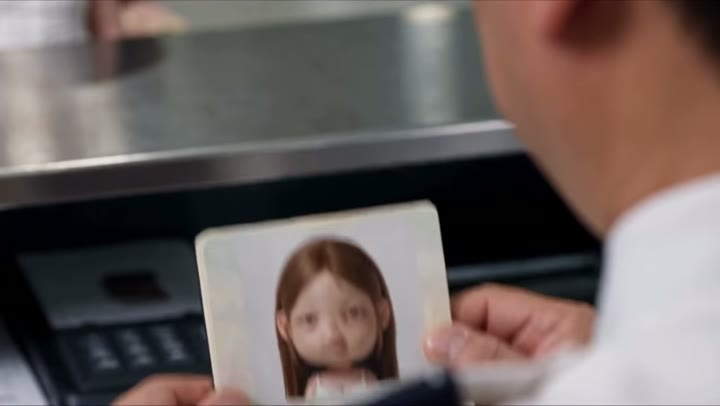
1위 A2O May - Shijie 💜 Immigration Inspection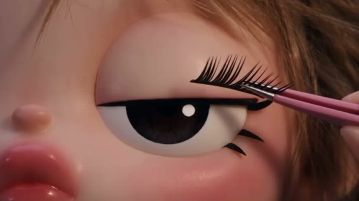
2위 A2O May - Shijie · Going Out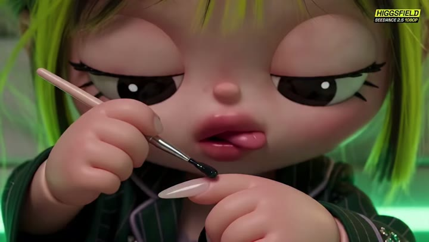
3위 🖌️ It's so hard to wait for my nail polish to dry ㅜㅜ전체 순위
| # | 영상 | 좋아요 | 댓글 | 업로드 | |
|---|---|---|---|---|---|
| 1 | Immigration Inspection (입국심사) DdBhX7ah6GR | 2,962,678 | 2,646 | 2026-09-08 | 상세 분석 ↓ |
| 2 | Going Out (속눈썹 붙이기) Dc051CjSK60 | 2,352,824 | 1,782 | 2026-09-03 | 상세 분석 ↓ |
| 3 | Nail polish (셀프 네일 실패) DdJh4wJSxAc | 851,187 | 582 | 2026-09-11 | 상세 분석 ↓ |
| 4 | The reason why home is the best Dc_M3P5Jddv | 832,760 | 673 | 2026-09-07 | 요약만 |
| 5 | Meat tasting corner Dc5-evtT4Mi | 741,370 | 613 | 2026-09-05 | 요약만 |
| 6 | Curly hair is a pain DdMMxjMyg8o | 513,333 | 254 | 2026-09-12 | 요약만 |
| 7 | How to Online Shop Successfully Dc8YEsDP2tN | 316,939 | 102 | 2026-09-06 | 요약만 |
| 8 | Can't trust filters DdGr80FutBM | 278,232 | 200 | 2026-09-10 | 요약만 |
| 9 | ai_vitaminc prompt collab DclorZZOFce | 215,196 | 150 | 2026-08-28 | 요약만 |
Top 3 공통 공식
| 주제 | 뷰티 셀프케어 실패담 (속눈썹·네일·화장) — 여성 타깃 100% 공감 소재 |
|---|---|
| 구조 | 시도 → 실패 → 꼼수/재시도 → 반전 → 뻔뻔한 마무리 (30초 안에 기승전결) |
| 캐릭터 연기 | 반쯤 감긴 눈 + 뾰로통 입 = '무심한 도도함'이 기본값. 표정 변화 폭이 곧 웃음 크기 |
| 화면비 | 3편 모두 16:9 가로 (릴스 안에서 오히려 영화처럼 보여 차별화) |
| 길이 | 30초 (3위만 광고 엔드카드 포함 33초) |
| 컷 템포 | 1위 1.8초/컷(빠름) · 2위 3.8초/컷(롱테이크 ASMR) · 3위 2.5초/컷 |
| 자막 | 1·2위 0개, 3위 마지막 대사 1줄만 영/한 이중 → 언어 장벽 없음 |
| 사운드 | 배경음악 없음. 룸톤 + 폴리 효과음 + 캐릭터 무언 보컬(흥, 하품, 휘파람) |
| 룩 | 미니어처 인형 매크로 사진 느낌: 얕은 심도, 보케, 부드러운 키라이트, 비닐 광택 피부 |
| 엔딩 | 하드 블랙 컷 or 페이드 → 자동 반복 재생 유도 |
AI 모델 역할 분담
| 모델 | 강점 | 이 영상에서 맡길 일 | 담당 샷 |
|---|---|---|---|
| Seedance 2.x (Dreamina/Higgsfield) | 원본 3편의 실제 제작 계열 | 캐릭터 일관성, 멀티샷, 네이티브 효과음, 인형 질감 | 기본 모델 · 대면 구도 · 와이드 이동 |
| Kling | 손·도구 물리 | 떼기/짜기/누르기/붓질/걷기 트래킹 | 인서트 · 손 연기 · 트래킹 |
| MiniMax Hailuo | 과장된 얼굴 연기 | 째려보기, 볼 부풀리기, 눈 휘둥그레, 하품 | 표정 CU · 리액션 |
| Google Veo 3.x | 네이티브 오디오·대사 립싱크 | 물방울·도장 같은 매크로 물리 + 효과음, 한 줄 대사 | 매크로 인서트 · 대사 샷 |
| Nano Banana / Seedream 4 / Midjourney v7 | 첫 프레임 이미지 | 캐릭터 시트 → 샷별 첫 프레임을 같은 레퍼런스로 생성 | 이미지 단계 |
원본 제작 도구는 캡션·워터마크로 확인했습니다(1·2위 Dreamina, 3위 Higgsfield Seedance 2.5). 다른 모델 배정은 각 모델의 알려진 강점을 기준으로 한 추천이며, 실제 결과는 한두 번 테스트해 보고 확정하세요.
제작 순서
1) 캐릭터 시트 1장: STYLE + CHARACTER 프롬프트로 햄찌 정면/측면/3/4 3면도 생성 → 이후 모든 이미지의 레퍼런스 2) 샷별 첫 프레임: 각 페이지의 '① 이미지 프롬프트' + 캐릭터 시트 레퍼런스 → 16:9 1920x1080 3) 샷별 영상: '② I2V 프롬프트' + 첫 프레임 → 모델은 샷 카드의 1순위 칩 사용, 길이는 원본+0.5초 여유 4) 사운드: 모델 네이티브 오디오 유지 → 부족한 효과음만 사운드 표의 시점에 추가 (BGM 없음) 5) 조립: 페이지의 build.sh(FFmpeg)로 원본과 같은 컷 길이 자르기 → 9:16 버전까지 출력 또는 HyperFrames index.html로 자막·전환·엔드카드 포함 렌더 6) 검수: 원본과 나란히 재생해 컷 타이밍 ±1프레임, 표정 비트, 효과음 위치 비교
A2O May - Shijie 💜 Immigration Inspection
한 줄 스토리
공항 입국심사. 여권 사진(생얼)과 풀메이크업 얼굴이 달라 심사관이 지적 → 속눈썹을 떼고, 리무버로 화장을 지우자 눈 자체가 사라짐 → 심사관 경악 → 도장 쾅 → 캐리어 끌고 당당히 퇴장 → 볼 빵빵 엔딩.1위-1. 컷 타임라인 (실측 · 클릭하면 해당 샷으로)
컷 시점은 ffmpeg 장면 변화 감지(scene>0.25)로 측정 후, 애매한 구간은 0.1초 단위 프레임으로 직접 확인. 색 블록 폭 = 실제 길이 비율.
| 구간 | 역할 | 내용 |
|---|---|---|
| 0.0–5.0 | SETUP 상황+대비 | 여권 내밀기 → 여권사진(생얼) 확인 → 심사관이 속눈썹 지적 |
| 5.0–11.4 | ESCALATION 행동 | 속눈썹 좌/우 떼기 → 째려보기 → 리무버 적시기 |
| 11.4–16.0 | TWIST 반전 | 화장 닦기 → 눈이 통째로 사라진 얼굴 공개 (웃음 피크) |
| 16.0–17.9 | REACTION | 여권 표지와 얼굴 나란히 → 심사관 눈 휘둥그레 |
| 17.9–23.4 | RESOLUTION | 도장 쾅 → 여권 돌려받기 → 캐리어 위 삐짐 → 퇴장 |
| 23.4–30.0 | BUTTON 마무리 개그 | 휘파람 걷기 → 볼 부풀리며 빨개짐 → 0.37s 블랙 (루프 유도) |
1위-2. 떡상 편집 포인트
- 첫 1.5초 안에 '공항·여권'이 보여 설명 없이 상황 이해 (0.0s 여권이 카메라 쪽으로 밀려옴)
- 여권사진 vs 실물 = 누구나 겪는 공감 밈 → 댓글 유도 ('나도 여권사진 다름')
- 자막 0개 → 전 세계 공용 (좋아요 296만의 핵심: 언어 장벽 없음)
- 평균 샷 길이 1.8초, 17컷 → 스크롤 멈춘 뒤 이탈할 틈이 없음
- OTS↔리버스(심사관 어깨 너머 ↔ 캐릭터) 대면 구도로 '심문' 긴장감
- 인서트(리무버 짜기·도장) = 촉각 ASMR 만족감 구간으로 템포 쉼표
- 반전(눈이 사라짐)을 13.6s = 영상 45% 지점에 배치 → 중반 이탈 방지
- 마지막 0.37초 하드 블랙 컷 → 자동 재생 루프 시 '한 번 더' 보게 됨
1위-3. 캐릭터 변환 기준 (원본 인형 → 햄찌)
모든 프롬프트는 아래 3개 블록 + 샷별 장면으로 조립돼 있습니다. 다른 동물로 바꿀 때는 CHARACTER 블록만 교체하면 전 샷이 한 번에 바뀝니다. (예: “golden-cream Syrian hamster” → “white Maltese puppy”)
hyperreal miniature designer-toy photography, cinematic 16:9 frame, shallow depth of field, 85mm macro lens look, soft diffused key light with gentle rim light, creamy bokeh, subtle film grain, Pop Mart / Blythe collectible-doll aesthetic, glossy vinyl-resin skin with soft subsurface scattering, ultra-detailed, 4K
HAMZZI, a chubby anthropomorphic golden-cream Syrian hamster girl designer-toy figure (white muzzle and belly fur, tiny pink nose, small round ears, oversized glossy black doll eyes under big dome eyelids that sit heavy and half-closed in a sassy deadpan look, pink blush cheeks, tiny glossy pink pouty mouth, chibi 1:1.6 head-to-body proportion, little pink paws with tiny fingers, fine soft fur texture over vinyl-toy volume)
white lace camisole with thin straps, tiny silver heart necklace, grey ruffled tiered mini skirt, white fabric headband with tiny pink hearts, white scrunchie on right wrist, pink crystal bead bracelet on left wrist, mint-green chunky platform sandals with pink bows
1위-4. 샷별 정밀 분석 + 프롬프트
샷 크기 용어 정리
| ECU | 익스트림 클로즈업 | 눈·손톱 하나만 꽉 차게 (감정/디테일 극대화) |
| CU | 클로즈업 | 얼굴 전체 (표정 리액션) |
| MCU | 미디엄 클로즈업 | 가슴 위 (대사/표정 + 약간의 손동작) |
| MS | 미디엄 샷 | 허리 위 (행동이 보이는 기본 샷) |
| WS | 와이드 샷 | 전신+공간 (상황 설명/이동) |
| OTS | 오버 더 숄더 | 상대 어깨 너머로 찍기 (대면 긴장감) |
| INSERT | 인서트 | 손·소품만 따로 (촉각·ASMR 만족감) |
| POV | 시점 샷 | 캐릭터/거울 시점 (몰입) |
MS
0.000s → 1.467s · 1.47초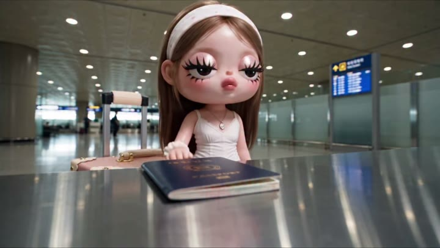
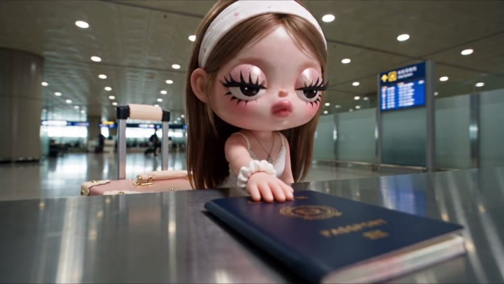
| 샷 크기 | MS |
|---|---|
| 앵글 | 카운터 높이 아이레벨 (정면, 살짝 로우) |
| 카메라 무빙 | 아주 느린 푸시인 + 여권이 카메라 쪽으로 밀려와 전경이 커짐 |
| 구도 · 피사체 위치 | 캐릭터 중앙 약간 왼쪽, 얼굴 상단 1/3선. 전경 하단 1/3에 스테인리스 카운터와 여권. 왼쪽 뒤 핑크 캐리어, 오른쪽 위 파란 출발 안내판 |
| 연기 · 동작 | 앞발로 여권을 카메라 쪽으로 쓱 밀어줌. 무표정·반쯤 감긴 눈 |
| 배경 · 조명 | modern Korean international airport immigration hall, glossy terrazzo floor, ceiling downlights, blue departure board, travellers softly blurred in the background / 천장 다운라이트 보케, 냉백색 5000K |
| 전환 | 하드 컷 |
| 사운드 | 공항 룸톤, 여권이 금속 위로 미끄러지는 '스윽' |
| 자막 · 텍스트 | 없음 |
| 편집 의도 (왜 떡상?) | 0.5초 만에 '공항 입국심사' 상황 설명 = 설명 자막이 필요 없는 오프닝 |
hyperreal miniature designer-toy photography, cinematic 16:9 frame, shallow depth of field, 85mm macro lens look, soft diffused key light with gentle rim light, creamy bokeh, subtle film grain, Pop Mart / Blythe collectible-doll aesthetic, glossy vinyl-resin skin with soft subsurface scattering, ultra-detailed, 4K. HAMZZI, a chubby anthropomorphic golden-cream Syrian hamster girl designer-toy figure (white muzzle and belly fur, tiny pink nose, small round ears, oversized glossy black doll eyes under big dome eyelids that sit heavy and half-closed in a sassy deadpan look, pink blush cheeks, tiny glossy pink pouty mouth, chibi 1:1.6 head-to-body proportion, little pink paws with tiny fingers, fine soft fur texture over vinyl-toy volume). Outfit: white lace camisole with thin straps, tiny silver heart necklace, grey ruffled tiered mini skirt, white fabric headband with tiny pink hearts, white scrunchie on right wrist, pink crystal bead bracelet on left wrist, mint-green chunky platform sandals with pink bows. Face state: full glam: huge spiky black false eyelashes on both eyes, shimmering pink glitter eyeshadow covering the big dome eyelids, heavy sultry half-lidded stare, glossy pout. Scene: standing behind a brushed stainless-steel immigration counter, one paw sliding a navy Korean passport across the counter toward the camera, pink vintage hard-shell suitcase behind her on the left, modern Korean international airport immigration hall, glossy terrazzo floor, ceiling downlights, blue departure board, travellers softly blurred in the background, counter surface in sharp foreground.
text, watermark, logo, subtitles, extra fingers, fused paws, human face on the character, realistic human skin on the character, deformed eyes, asymmetrical eyes, flat cartoon shading, blurry subject, low resolution
[1.5s, 16:9, 30fps] Camera: static eye-level at counter height with a very slow push-in. Action beats: 0.0s she rests her paw on the passport; 0.4-1.2s she slides it toward the lens so it grows in the foreground; she keeps a bored half-lidded stare at the officer. Audio (native, no music): airport hall ambience, passport sliding on steel. Keep the character identical to the reference image (same fur colour, outfit, proportions). Real-world physics, tactile miniature scale, no morphing of the face, no extra limbs. No background music.
OTS / INSERT
1.467s → 3.467s · 2.00초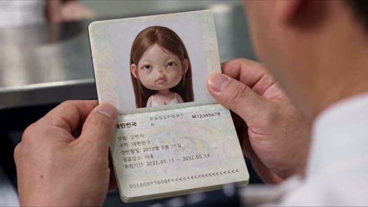
| 샷 크기 | OTS / INSERT |
|---|---|
| 앵글 | 심사관 오른쪽 어깨 너머, 살짝 하이앵글 |
| 카메라 무빙 | 느린 푸시인 (여권 사진 쪽으로) |
| 구도 · 피사체 위치 | 오른쪽 1/3 = 심사관 뒤통수·흰 셔츠(아웃포커스). 중앙 = 양손으로 펼친 여권 사진면 (캐릭터 생얼 사진). 초점은 사진 |
| 연기 · 동작 | 심사관이 여권을 들어 사진을 확인. 사진 속 캐릭터는 눈이 작고 퉁퉁 부은 생얼 |
| 배경 · 조명 | 심사대 내부, 어두운 회색 |
| 전환 | 하드 컷 |
| 사운드 | 여권 종이 넘기는 '팔락' |
| 자막 · 텍스트 | 없음 (여권 내 한글 정보는 소품 디테일) |
| 편집 의도 (왜 떡상?) | 'Before' 정보를 먼저 보여줘서 이후 반전의 복선 역할 |
hyperreal miniature designer-toy photography, cinematic 16:9 frame, shallow depth of field, 85mm macro lens look, soft diffused key light with gentle rim light, creamy bokeh, subtle film grain, Pop Mart / Blythe collectible-doll aesthetic, glossy vinyl-resin skin with soft subsurface scattering, ultra-detailed, 4K. HAMZZI, a chubby anthropomorphic golden-cream Syrian hamster girl designer-toy figure (white muzzle and belly fur, tiny pink nose, small round ears, oversized glossy black doll eyes under big dome eyelids that sit heavy and half-closed in a sassy deadpan look, pink blush cheeks, tiny glossy pink pouty mouth, chibi 1:1.6 head-to-body proportion, little pink paws with tiny fingers, fine soft fur texture over vinyl-toy volume). Outfit: white lace camisole with thin straps, tiny silver heart necklace, grey ruffled tiered mini skirt, white fabric headband with tiny pink hearts, white scrunchie on right wrist, pink crystal bead bracelet on left wrist, mint-green chunky platform sandals with pink bows. Face state: no makeup: small plain beady eyes, no lashes, slightly puffy lids, same pout. Scene: over-the-shoulder shot from behind the immigration officer (a middle-aged Korean male immigration officer in a white short-sleeve uniform shirt with navy epaulettes, only partly in frame and out of focus), his two hands holding an open Korean passport photo page in sharp focus; the ID photo shows HAMZZI with a bare face — small plain beady eyes, puffy lids, no lashes; Korean text printed on the page.
text, watermark, logo, subtitles, extra fingers, fused paws, human face on the character, realistic human skin on the character, deformed eyes, asymmetrical eyes, flat cartoon shading, blurry subject, low resolution
[2.0s, 16:9, 30fps] Camera: over-the-shoulder, slow push-in toward the passport photo. Action beats: the officer's hands lift the open passport and tilt it slightly to compare; the photo stays readable. Audio (native, no music): paper rustle, faint airport ambience. Keep the character identical to the reference image (same fur colour, outfit, proportions). Real-world physics, tactile miniature scale, no morphing of the face, no extra limbs. No background music.
OTS (리버스)
3.467s → 5.000s · 1.53초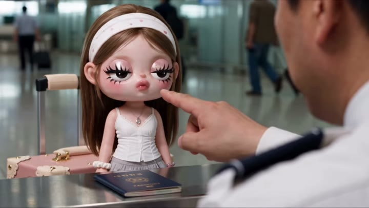
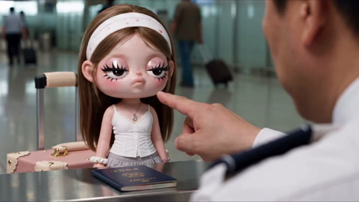
| 샷 크기 | OTS (리버스) |
|---|---|
| 앵글 | 심사관 등 뒤 어깨 너머, 아이레벨 |
| 카메라 무빙 | 고정 + 미세한 핸드헬드 |
| 구도 · 피사체 위치 | 오른쪽 전경 = 심사관 얼굴 옆선·어깨(블러). 중앙 = 캐릭터. 심사관 검지가 캐릭터 속눈썹을 가리킴 (프레임 중앙 대각선) |
| 연기 · 동작 | 심사관이 손가락으로 '이거 뭐냐'는 듯 속눈썹을 가리킴. 캐릭터는 무표정 유지 |
| 배경 · 조명 | modern Korean international airport immigration hall, glossy terrazzo floor, ceiling downlights, blue departure board, travellers softly blurred in the background |
| 전환 | 하드 컷 |
| 사운드 | 룸톤, 옷 스치는 소리 |
| 자막 · 텍스트 | 없음 |
| 편집 의도 (왜 떡상?) | 갈등 발생 지점. 손가락 대각선이 시선을 캐릭터 눈으로 유도 |
hyperreal miniature designer-toy photography, cinematic 16:9 frame, shallow depth of field, 85mm macro lens look, soft diffused key light with gentle rim light, creamy bokeh, subtle film grain, Pop Mart / Blythe collectible-doll aesthetic, glossy vinyl-resin skin with soft subsurface scattering, ultra-detailed, 4K. HAMZZI, a chubby anthropomorphic golden-cream Syrian hamster girl designer-toy figure (white muzzle and belly fur, tiny pink nose, small round ears, oversized glossy black doll eyes under big dome eyelids that sit heavy and half-closed in a sassy deadpan look, pink blush cheeks, tiny glossy pink pouty mouth, chibi 1:1.6 head-to-body proportion, little pink paws with tiny fingers, fine soft fur texture over vinyl-toy volume). Outfit: white lace camisole with thin straps, tiny silver heart necklace, grey ruffled tiered mini skirt, white fabric headband with tiny pink hearts, white scrunchie on right wrist, pink crystal bead bracelet on left wrist, mint-green chunky platform sandals with pink bows. Face state: full glam: huge spiky black false eyelashes on both eyes, shimmering pink glitter eyeshadow covering the big dome eyelids, heavy sultry half-lidded stare, glossy pout. Scene: reverse over-the-shoulder: the officer (a middle-aged Korean male immigration officer in a white short-sleeve uniform shirt with navy epaulettes, only partly in frame and out of focus) in the right foreground, his index finger pointing right at HAMZZI's false eyelashes; she stands behind the counter, deadpan; passport lying on the counter.
text, watermark, logo, subtitles, extra fingers, fused paws, human face on the character, realistic human skin on the character, deformed eyes, asymmetrical eyes, flat cartoon shading, blurry subject, low resolution
[1.5s, 16:9, 30fps] Camera: static over-the-shoulder with subtle handheld drift. Action beats: the officer raises his hand and points at her eyelashes twice; she does not move except a slow blink. Audio (native, no music): airport ambience, fabric rustle. Keep the character identical to the reference image (same fur colour, outfit, proportions). Real-world physics, tactile miniature scale, no morphing of the face, no extra limbs. No background music.
CU
5.000s → 6.467s · 1.47초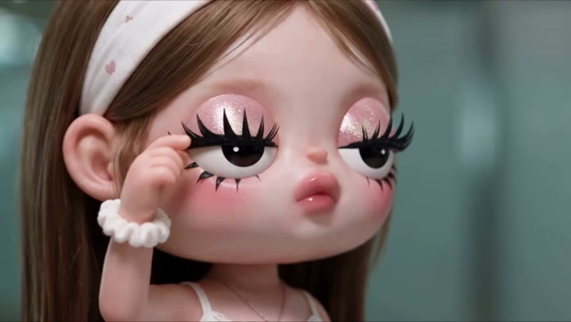
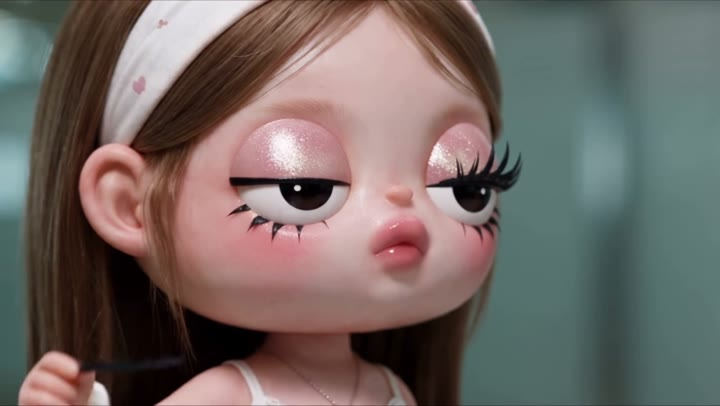
| 샷 크기 | CU |
|---|---|
| 앵글 | 캐릭터 오른쪽 3/4 측면 (카메라 기준 좌측 얼굴) |
| 카메라 무빙 | 고정 |
| 구도 · 피사체 위치 | 얼굴이 프레임 가득, 눈 라인 상단 1/3. 오른손이 왼쪽 가장자리에서 들어옴 |
| 연기 · 동작 | 앞발가락으로 오른쪽 속눈썹 끝을 집어 '쭉' 떼어냄. 눈은 그대로 반쯤 감김 |
| 배경 · 조명 | 청록색 공항 벽 보케 |
| 전환 | 하드 컷 (다음 샷과 좌우 대칭) |
| 사운드 | 속눈썹 떼는 '찌익' 미세음 |
| 자막 · 텍스트 | 없음 |
| 편집 의도 (왜 떡상?) | 좌·우 두 번 반복(3의 법칙 전 단계)으로 리듬 생성 |
hyperreal miniature designer-toy photography, cinematic 16:9 frame, shallow depth of field, 85mm macro lens look, soft diffused key light with gentle rim light, creamy bokeh, subtle film grain, Pop Mart / Blythe collectible-doll aesthetic, glossy vinyl-resin skin with soft subsurface scattering, ultra-detailed, 4K. HAMZZI, a chubby anthropomorphic golden-cream Syrian hamster girl designer-toy figure (white muzzle and belly fur, tiny pink nose, small round ears, oversized glossy black doll eyes under big dome eyelids that sit heavy and half-closed in a sassy deadpan look, pink blush cheeks, tiny glossy pink pouty mouth, chibi 1:1.6 head-to-body proportion, little pink paws with tiny fingers, fine soft fur texture over vinyl-toy volume). Outfit: white lace camisole with thin straps, tiny silver heart necklace, grey ruffled tiered mini skirt, white fabric headband with tiny pink hearts, white scrunchie on right wrist, pink crystal bead bracelet on left wrist, mint-green chunky platform sandals with pink bows. Face state: full glam: huge spiky black false eyelashes on both eyes, shimmering pink glitter eyeshadow covering the big dome eyelids, heavy sultry half-lidded stare, glossy pout. Scene: close-up three-quarter view of HAMZZI's face, her right paw pinching the outer end of her right false eyelash, teal blurred wall behind.
text, watermark, logo, subtitles, extra fingers, fused paws, human face on the character, realistic human skin on the character, deformed eyes, asymmetrical eyes, flat cartoon shading, blurry subject, low resolution
[1.5s, 16:9, 30fps] Camera: static close-up. Action beats: she pinches the false eyelash and peels it off in one slow pull, eyelid stretches slightly then snaps back. Audio (native, no music): tiny sticky peel sound. Keep the character identical to the reference image (same fur colour, outfit, proportions). Real-world physics, tactile miniature scale, no morphing of the face, no extra limbs. No background music.
CU
6.467s → 7.600s · 1.13초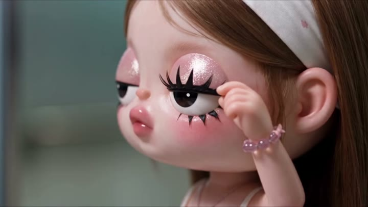
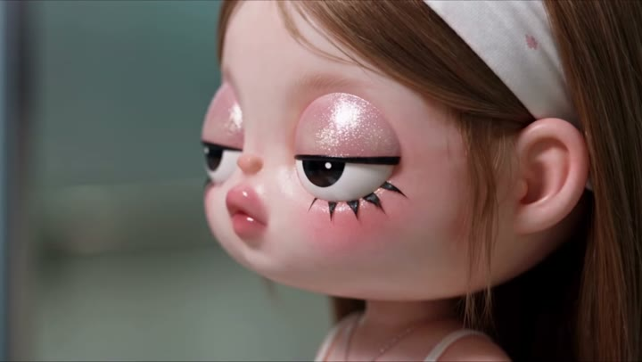
| 샷 크기 | CU |
|---|---|
| 앵글 | 반대쪽 3/4 측면 (좌우 반전 구도) |
| 카메라 무빙 | 고정 |
| 구도 · 피사체 위치 | 앞 샷과 거울 대칭. 얼굴 오른쪽 배치, 왼손이 오른쪽 가장자리에서 들어옴 |
| 연기 · 동작 | 왼쪽 속눈썹도 떼어냄. 떼고 나면 눈이 한층 작아 보임 |
| 배경 · 조명 | 청록 보케 |
| 전환 | 하드 컷 |
| 사운드 | '찌익' |
| 자막 · 텍스트 | 없음 |
| 편집 의도 (왜 떡상?) | 미러 컷 핑퐁 = 짧고 경쾌한 반복 |
hyperreal miniature designer-toy photography, cinematic 16:9 frame, shallow depth of field, 85mm macro lens look, soft diffused key light with gentle rim light, creamy bokeh, subtle film grain, Pop Mart / Blythe collectible-doll aesthetic, glossy vinyl-resin skin with soft subsurface scattering, ultra-detailed, 4K. HAMZZI, a chubby anthropomorphic golden-cream Syrian hamster girl designer-toy figure (white muzzle and belly fur, tiny pink nose, small round ears, oversized glossy black doll eyes under big dome eyelids that sit heavy and half-closed in a sassy deadpan look, pink blush cheeks, tiny glossy pink pouty mouth, chibi 1:1.6 head-to-body proportion, little pink paws with tiny fingers, fine soft fur texture over vinyl-toy volume). Outfit: white lace camisole with thin straps, tiny silver heart necklace, grey ruffled tiered mini skirt, white fabric headband with tiny pink hearts, white scrunchie on right wrist, pink crystal bead bracelet on left wrist, mint-green chunky platform sandals with pink bows. Face state: full glam: huge spiky black false eyelashes on both eyes, shimmering pink glitter eyeshadow covering the big dome eyelids, heavy sultry half-lidded stare, glossy pout; right eye already without lashes. Scene: mirrored close-up from the other side, her left paw peeling off the left false eyelash, the right eye already bare and smaller.
text, watermark, logo, subtitles, extra fingers, fused paws, human face on the character, realistic human skin on the character, deformed eyes, asymmetrical eyes, flat cartoon shading, blurry subject, low resolution
[1.1s, 16:9, 30fps] Camera: static close-up, mirror composition of the previous shot. Action beats: she peels the left eyelash off quickly and lowers her paw. Audio (native, no music): tiny sticky peel sound. Keep the character identical to the reference image (same fur colour, outfit, proportions). Real-world physics, tactile miniature scale, no morphing of the face, no extra limbs. No background music.
MS (OTS 전경)
7.600s → 9.667s · 2.07초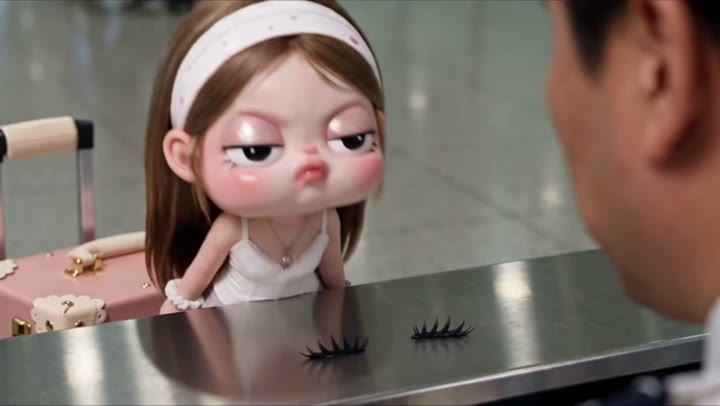
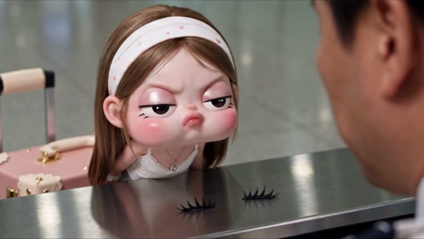
| 샷 크기 | MS (OTS 전경) |
|---|---|
| 앵글 | 아이레벨, 심사관 머리 오른쪽 전경 |
| 카메라 무빙 | 고정 |
| 구도 · 피사체 위치 | 캐릭터 좌측 1/3, 카운터 위 떼어낸 속눈썹 2개가 전경 중앙(거미처럼). 오른쪽 = 심사관 뒤통수 블러 |
| 연기 · 동작 | 볼 빵빵 + 미간 찌푸리고 째려봄 (삐짐). 속눈썹을 카운터에 툭 내려놓음 |
| 배경 · 조명 | modern Korean international airport immigration hall, glossy terrazzo floor, ceiling downlights, blue departure board, travellers softly blurred in the background |
| 전환 | 하드 컷 |
| 사운드 | 7.7s '톡' + 콧방귀 '흥!' (가장 큰 히트 중 하나 -8dB) |
| 자막 · 텍스트 | 없음 |
| 편집 의도 (왜 떡상?) | 캐릭터 성격(도도·삐짐) 각인. 무표정 → 째려보기 표정 변화가 첫 웃음 포인트 |
hyperreal miniature designer-toy photography, cinematic 16:9 frame, shallow depth of field, 85mm macro lens look, soft diffused key light with gentle rim light, creamy bokeh, subtle film grain, Pop Mart / Blythe collectible-doll aesthetic, glossy vinyl-resin skin with soft subsurface scattering, ultra-detailed, 4K. HAMZZI, a chubby anthropomorphic golden-cream Syrian hamster girl designer-toy figure (white muzzle and belly fur, tiny pink nose, small round ears, oversized glossy black doll eyes under big dome eyelids that sit heavy and half-closed in a sassy deadpan look, pink blush cheeks, tiny glossy pink pouty mouth, chibi 1:1.6 head-to-body proportion, little pink paws with tiny fingers, fine soft fur texture over vinyl-toy volume). Outfit: white lace camisole with thin straps, tiny silver heart necklace, grey ruffled tiered mini skirt, white fabric headband with tiny pink hearts, white scrunchie on right wrist, pink crystal bead bracelet on left wrist, mint-green chunky platform sandals with pink bows. Face state: bare smaller eyes with pink glitter shadow left, annoyed glare. Scene: medium shot, HAMZZI leaning on the counter glaring at the officer with a furrowed brow and puffed cheeks, two detached false eyelashes lying on the steel counter in the foreground like little spiders, officer's blurred head in the right foreground.
text, watermark, logo, subtitles, extra fingers, fused paws, human face on the character, realistic human skin on the character, deformed eyes, asymmetrical eyes, flat cartoon shading, blurry subject, low resolution
[2.1s, 16:9, 30fps] Camera: static. Action beats: she drops the lashes on the counter, huffs, puffs her cheeks and keeps glaring sideways at the officer. Audio (native, no music): tiny tap of lashes on steel, a short cute 'hmph!' vocal. Keep the character identical to the reference image (same fur colour, outfit, proportions). Real-world physics, tactile miniature scale, no morphing of the face, no extra limbs. No background music.
INSERT
9.667s → 11.400s · 1.73초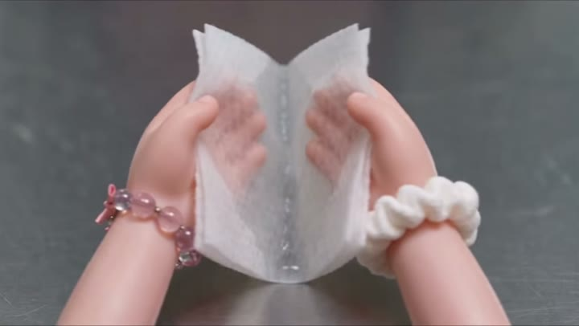
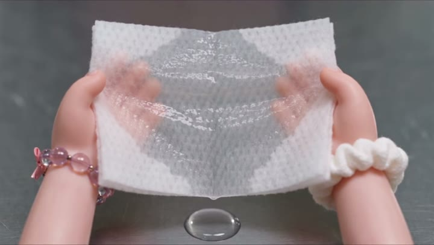
| 샷 크기 | INSERT |
|---|---|
| 앵글 | 약간 하이앵글, 손 정면 |
| 카메라 무빙 | 고정 |
| 구도 · 피사체 위치 | 화장솜 한 장이 중앙, 양 앞발이 좌우에서 쥠. 아래 카운터에 물방울이 떨어져 맺힘 |
| 연기 · 동작 | 리무버에 젖은 화장솜을 양손으로 펼치며 짜기 → 액체가 '똑' 떨어져 동그란 물방울 |
| 배경 · 조명 | 회색 금속 카운터, 부드러운 탑라이트 |
| 전환 | 하드 컷 |
| 사운드 | 젖은 솜 '찌걱' + 물방울 '똑' |
| 자막 · 텍스트 | 없음 |
| 편집 의도 (왜 떡상?) | ASMR 인서트 = 시각적 쉼표 + '이제 지운다' 예고 |
hyperreal miniature designer-toy photography, cinematic 16:9 frame, shallow depth of field, 85mm macro lens look, soft diffused key light with gentle rim light, creamy bokeh, subtle film grain, Pop Mart / Blythe collectible-doll aesthetic, glossy vinyl-resin skin with soft subsurface scattering, ultra-detailed, 4K. HAMZZI, a chubby anthropomorphic golden-cream Syrian hamster girl designer-toy figure (white muzzle and belly fur, tiny pink nose, small round ears, oversized glossy black doll eyes under big dome eyelids that sit heavy and half-closed in a sassy deadpan look, pink blush cheeks, tiny glossy pink pouty mouth, chibi 1:1.6 head-to-body proportion, little pink paws with tiny fingers, fine soft fur texture over vinyl-toy volume). Outfit: white lace camisole with thin straps, tiny silver heart necklace, grey ruffled tiered mini skirt, white fabric headband with tiny pink hearts, white scrunchie on right wrist, pink crystal bead bracelet on left wrist, mint-green chunky platform sandals with pink bows. Scene: insert shot of HAMZZI's two little paws (pink bead bracelet, white scrunchie) stretching a soaked white cotton pad, clear makeup remover liquid dripping onto the steel counter into a round droplet.
text, watermark, logo, subtitles, extra fingers, fused paws, human face on the character, realistic human skin on the character, deformed eyes, asymmetrical eyes, flat cartoon shading, blurry subject, low resolution
[1.7s, 16:9, 30fps] Camera: static insert, macro. Action beats: the paws squeeze and stretch the soaked cotton pad; liquid drips and lands as a glossy dome droplet. Audio (native, no music): wet squish, single water drop plip. Keep the character identical to the reference image (same fur colour, outfit, proportions). Real-world physics, tactile miniature scale, no morphing of the face, no extra limbs. No background music.
CU
11.400s → 13.600s · 2.20초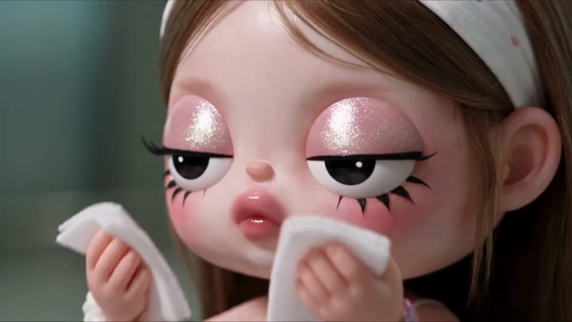
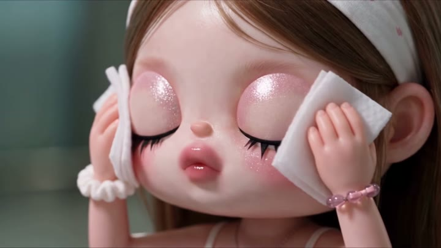
| 샷 크기 | CU |
|---|---|
| 앵글 | 정면 살짝 오른쪽 |
| 카메라 무빙 | 아주 느린 푸시인 |
| 구도 · 피사체 위치 | 얼굴 중앙, 양쪽 눈에 화장솜을 대고 좌우로 닦아냄 |
| 연기 · 동작 | 양손으로 화장솜을 눈에 대고 바깥쪽으로 문질러 닦음 (눈 감음) |
| 배경 · 조명 | 청록 보케 |
| 전환 | 하드 컷 |
| 사운드 | 솜 문지르는 사각사각 |
| 자막 · 텍스트 | 없음 |
| 편집 의도 (왜 떡상?) | 반전 직전 긴장. 무슨 일이 일어날지 예측하게 만듦 |
hyperreal miniature designer-toy photography, cinematic 16:9 frame, shallow depth of field, 85mm macro lens look, soft diffused key light with gentle rim light, creamy bokeh, subtle film grain, Pop Mart / Blythe collectible-doll aesthetic, glossy vinyl-resin skin with soft subsurface scattering, ultra-detailed, 4K. HAMZZI, a chubby anthropomorphic golden-cream Syrian hamster girl designer-toy figure (white muzzle and belly fur, tiny pink nose, small round ears, oversized glossy black doll eyes under big dome eyelids that sit heavy and half-closed in a sassy deadpan look, pink blush cheeks, tiny glossy pink pouty mouth, chibi 1:1.6 head-to-body proportion, little pink paws with tiny fingers, fine soft fur texture over vinyl-toy volume). Outfit: white lace camisole with thin straps, tiny silver heart necklace, grey ruffled tiered mini skirt, white fabric headband with tiny pink hearts, white scrunchie on right wrist, pink crystal bead bracelet on left wrist, mint-green chunky platform sandals with pink bows. Face state: pink glitter shadow smearing. Scene: close-up, HAMZZI pressing white cotton pads onto both eyes with her paws, eyes closed, wiping outward.
text, watermark, logo, subtitles, extra fingers, fused paws, human face on the character, realistic human skin on the character, deformed eyes, asymmetrical eyes, flat cartoon shading, blurry subject, low resolution
[2.2s, 16:9, 30fps] Camera: slow push-in close-up. Action beats: she wipes both eyes outward in two strokes, glitter smearing onto the pads. Audio (native, no music): soft cotton rubbing. Keep the character identical to the reference image (same fur colour, outfit, proportions). Real-world physics, tactile miniature scale, no morphing of the face, no extra limbs. No background music.
CU
13.600s → 16.033s · 2.43초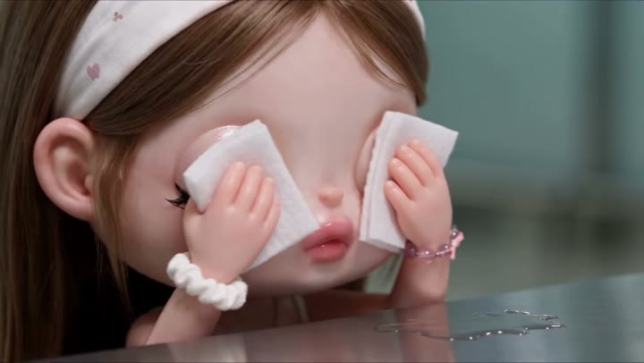
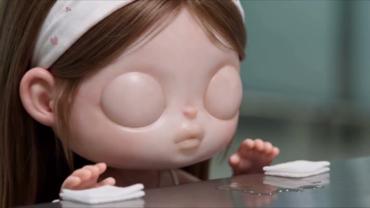
| 샷 크기 | CU |
|---|---|
| 앵글 | 3/4 측면 |
| 카메라 무빙 | 고정 |
| 구도 · 피사체 위치 | 얼굴 크게 중앙. 화장솜을 내리는 순간 눈이 있던 자리에 '민무늬 둥근 돔'만 남음 |
| 연기 · 동작 | 화장솜을 치우자 눈이 통째로 사라짐 → 솜을 카운터에 내려놓음. 입만 뾰로통 |
| 배경 · 조명 | 청록 보케, 카운터 반사 |
| 전환 | 하드 컷 |
| 사운드 | (거의 무음) → 16.2s 다음 샷 여권 '탁' |
| 자막 · 텍스트 | 없음 |
| 편집 의도 (왜 떡상?) | ★ 웃음 피크(반전). '화장 지우면 눈이 없다'는 과장 밈을 시각화 |
hyperreal miniature designer-toy photography, cinematic 16:9 frame, shallow depth of field, 85mm macro lens look, soft diffused key light with gentle rim light, creamy bokeh, subtle film grain, Pop Mart / Blythe collectible-doll aesthetic, glossy vinyl-resin skin with soft subsurface scattering, ultra-detailed, 4K. HAMZZI, a chubby anthropomorphic golden-cream Syrian hamster girl designer-toy figure (white muzzle and belly fur, tiny pink nose, small round ears, oversized glossy black doll eyes under big dome eyelids that sit heavy and half-closed in a sassy deadpan look, pink blush cheeks, tiny glossy pink pouty mouth, chibi 1:1.6 head-to-body proportion, little pink paws with tiny fingers, fine soft fur texture over vinyl-toy volume). Outfit: white lace camisole with thin straps, tiny silver heart necklace, grey ruffled tiered mini skirt, white fabric headband with tiny pink hearts, white scrunchie on right wrist, pink crystal bead bracelet on left wrist, mint-green chunky platform sandals with pink bows. Face state: comedic 'wiped-off' face: where the eyes were there are only two smooth featureless fur-covered dome bulges, no eyes visible at all, same pout. Scene: close-up three-quarter, HAMZZI lowering the cotton pads to reveal her face with no eyes at all — two smooth blank fur-covered domes where the eyes were — pads resting on the counter.
text, watermark, logo, subtitles, extra fingers, fused paws, human face on the character, realistic human skin on the character, deformed eyes, asymmetrical eyes, flat cartoon shading, blurry subject, low resolution
[2.4s, 16:9, 30fps] Camera: static close-up. Action beats: she slowly lowers both cotton pads revealing the blank eyeless face, then sets the pads on the counter and stays still. Audio (native, no music): near silence, faint ambience. Keep the character identical to the reference image (same fur colour, outfit, proportions). Real-world physics, tactile miniature scale, no morphing of the face, no extra limbs. No background music.
MS (비교 구도)
16.033s → 17.867s · 1.83초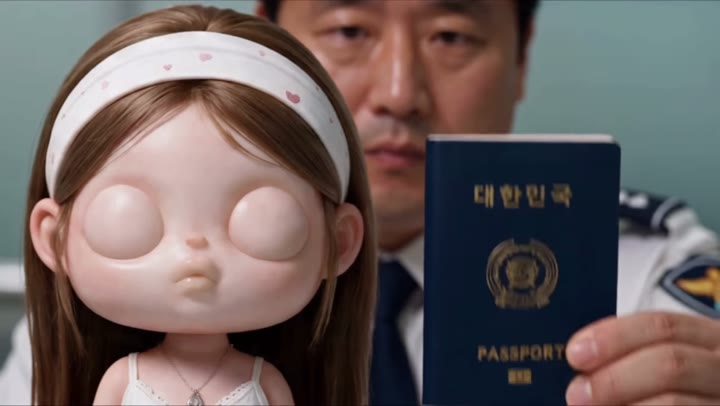
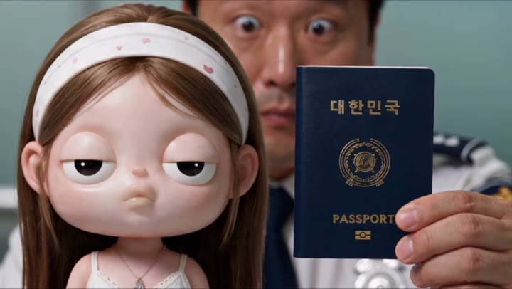
| 샷 크기 | MS (비교 구도) |
|---|---|
| 앵글 | 정면 아이레벨 |
| 카메라 무빙 | 고정 |
| 구도 · 피사체 위치 | 좌측 = 캐릭터 상반신(작은 맨눈). 뒤 상단 중앙 = 심사관 얼굴(블러). 우측 = 심사관이 여권 표지 '대한민국 PASSPORT'를 얼굴 옆에 나란히 듦 |
| 연기 · 동작 | 이제 눈이 작고 평범해진 얼굴 = 여권사진과 일치. 심사관 눈이 휘둥그레 (17.0s) |
| 배경 · 조명 | 심사대 뒤 청록 벽 |
| 전환 | 하드 컷 |
| 사운드 | 여권 '탁', 심사관 '헉' |
| 자막 · 텍스트 | 없음 |
| 편집 의도 (왜 떡상?) | '비교샷' = 관객이 직접 대조하게 만드는 참여형 구도 |
hyperreal miniature designer-toy photography, cinematic 16:9 frame, shallow depth of field, 85mm macro lens look, soft diffused key light with gentle rim light, creamy bokeh, subtle film grain, Pop Mart / Blythe collectible-doll aesthetic, glossy vinyl-resin skin with soft subsurface scattering, ultra-detailed, 4K. HAMZZI, a chubby anthropomorphic golden-cream Syrian hamster girl designer-toy figure (white muzzle and belly fur, tiny pink nose, small round ears, oversized glossy black doll eyes under big dome eyelids that sit heavy and half-closed in a sassy deadpan look, pink blush cheeks, tiny glossy pink pouty mouth, chibi 1:1.6 head-to-body proportion, little pink paws with tiny fingers, fine soft fur texture over vinyl-toy volume). Outfit: white lace camisole with thin straps, tiny silver heart necklace, grey ruffled tiered mini skirt, white fabric headband with tiny pink hearts, white scrunchie on right wrist, pink crystal bead bracelet on left wrist, mint-green chunky platform sandals with pink bows. Face state: no makeup: small plain beady eyes, no lashes, slightly puffy lids, same pout. Scene: frontal medium shot: HAMZZI on the left with small plain bare eyes and a pout; behind her the officer (a middle-aged Korean male immigration officer in a white short-sleeve uniform shirt with navy epaulettes, only partly in frame and out of focus) holds a navy Korean passport cover reading '대한민국 PASSPORT' next to her face on the right, his eyes wide in shock.
text, watermark, logo, subtitles, extra fingers, fused paws, human face on the character, realistic human skin on the character, deformed eyes, asymmetrical eyes, flat cartoon shading, blurry subject, low resolution
[1.8s, 16:9, 30fps] Camera: static frontal. Action beats: the officer lifts the passport beside her face, looks from photo to face, his eyes pop wide; she blinks slowly. Audio (native, no music): passport tap, a small human gasp. Keep the character identical to the reference image (same fur colour, outfit, proportions). Real-world physics, tactile miniature scale, no morphing of the face, no extra limbs. No background music.
INSERT (매크로)
17.867s → 19.733s · 1.87초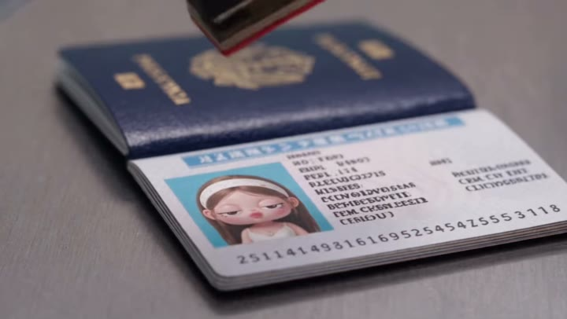
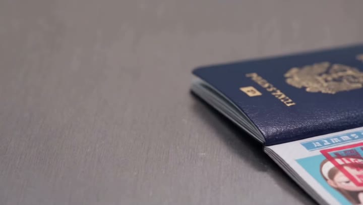
| 샷 크기 | INSERT (매크로) |
|---|---|
| 앵글 | 45° 하이앵글 |
| 카메라 무빙 | 살짝 좌측 슬라이드 |
| 구도 · 피사체 위치 | 여권 사진면 중앙, 검은 고무 도장이 위에서 내려와 사진 위를 찍음 → 들어올리면 빨간 인주 자국 |
| 연기 · 동작 | 도장 '쾅' → 들어올림 → 사진 위 빨간 입국 도장 |
| 배경 · 조명 | 회색 카운터 |
| 전환 | 하드 컷 |
| 사운드 | 18.0s 도장 '쾅' (최대 -8dB) + 잔향 |
| 자막 · 텍스트 | 없음 |
| 편집 의도 (왜 떡상?) | '통과!' 판정 = 서사 해결. 가장 큰 효과음으로 리듬 클라이맥스 |
hyperreal miniature designer-toy photography, cinematic 16:9 frame, shallow depth of field, 85mm macro lens look, soft diffused key light with gentle rim light, creamy bokeh, subtle film grain, Pop Mart / Blythe collectible-doll aesthetic, glossy vinyl-resin skin with soft subsurface scattering, ultra-detailed, 4K. HAMZZI, a chubby anthropomorphic golden-cream Syrian hamster girl designer-toy figure (white muzzle and belly fur, tiny pink nose, small round ears, oversized glossy black doll eyes under big dome eyelids that sit heavy and half-closed in a sassy deadpan look, pink blush cheeks, tiny glossy pink pouty mouth, chibi 1:1.6 head-to-body proportion, little pink paws with tiny fingers, fine soft fur texture over vinyl-toy volume). Outfit: white lace camisole with thin straps, tiny silver heart necklace, grey ruffled tiered mini skirt, white fabric headband with tiny pink hearts, white scrunchie on right wrist, pink crystal bead bracelet on left wrist, mint-green chunky platform sandals with pink bows. Scene: macro insert at 45 degrees: a black rubber immigration stamp pressing down onto the photo page of an open navy passport lying on a grey counter.
text, watermark, logo, subtitles, extra fingers, fused paws, human face on the character, realistic human skin on the character, deformed eyes, asymmetrical eyes, flat cartoon shading, blurry subject, low resolution
[1.9s, 16:9, 30fps] Camera: macro, slight slide to the left. Action beats: stamp slams down, holds 0.4s, lifts away revealing a red ink entry stamp over the photo. Audio (native, no music): heavy stamp thunk with short reverb. Keep the character identical to the reference image (same fur colour, outfit, proportions). Real-world physics, tactile miniature scale, no morphing of the face, no extra limbs. No background music.
INSERT
19.733s → 20.100s · 0.37초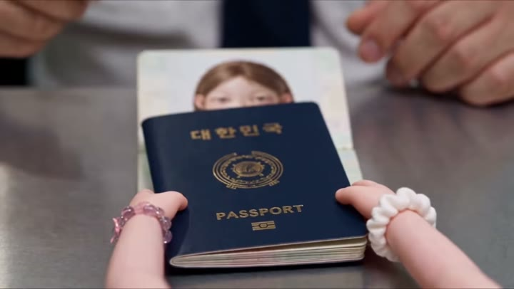
| 샷 크기 | INSERT |
|---|---|
| 앵글 | 하이앵글 |
| 카메라 무빙 | 고정 |
| 구도 · 피사체 위치 | 위쪽 = 심사관 손(블러), 아래 = 캐릭터 두 앞발이 여권을 잡음 |
| 연기 · 동작 | 여권을 돌려받음 (0.37초 초단컷) |
| 배경 · 조명 | 카운터 |
| 전환 | 하드 컷 |
| 사운드 | 여권 '탁' (-9dB) |
| 자막 · 텍스트 | 없음 |
| 편집 의도 (왜 떡상?) | 0.37초 플래시 컷으로 템포 가속 (엔딩 파트로 넘어가는 신호) |
hyperreal miniature designer-toy photography, cinematic 16:9 frame, shallow depth of field, 85mm macro lens look, soft diffused key light with gentle rim light, creamy bokeh, subtle film grain, Pop Mart / Blythe collectible-doll aesthetic, glossy vinyl-resin skin with soft subsurface scattering, ultra-detailed, 4K. HAMZZI, a chubby anthropomorphic golden-cream Syrian hamster girl designer-toy figure (white muzzle and belly fur, tiny pink nose, small round ears, oversized glossy black doll eyes under big dome eyelids that sit heavy and half-closed in a sassy deadpan look, pink blush cheeks, tiny glossy pink pouty mouth, chibi 1:1.6 head-to-body proportion, little pink paws with tiny fingers, fine soft fur texture over vinyl-toy volume). Outfit: white lace camisole with thin straps, tiny silver heart necklace, grey ruffled tiered mini skirt, white fabric headband with tiny pink hearts, white scrunchie on right wrist, pink crystal bead bracelet on left wrist, mint-green chunky platform sandals with pink bows. Scene: insert from above: the officer's hands pushing a closed navy passport back across the counter, HAMZZI's two small paws with bead bracelet and scrunchie grabbing it.
text, watermark, logo, subtitles, extra fingers, fused paws, human face on the character, realistic human skin on the character, deformed eyes, asymmetrical eyes, flat cartoon shading, blurry subject, low resolution
[0.4s, 16:9, 30fps] Camera: static top-down insert. Action beats: paws grab the passport and pull it toward the camera. Audio (native, no music): passport slap on counter. Keep the character identical to the reference image (same fur colour, outfit, proportions). Real-world physics, tactile miniature scale, no morphing of the face, no extra limbs. No background music.
WS 로우앵글
20.100s → 21.600s · 1.50초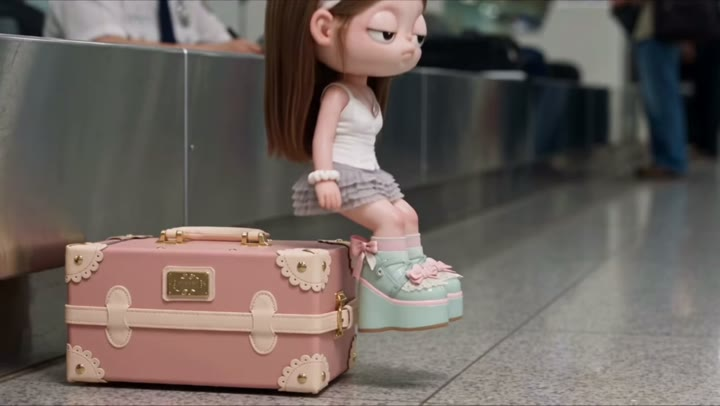
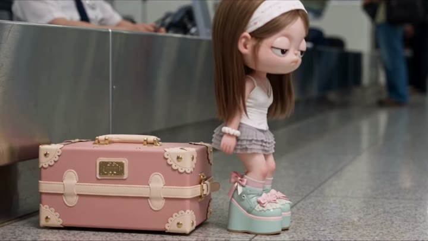
| 샷 크기 | WS 로우앵글 |
|---|---|
| 앵글 | 바닥 높이 로우앵글, 측면 |
| 카메라 무빙 | 고정 |
| 구도 · 피사체 위치 | 좌측 = 핑크 빈티지 캐리어, 캐릭터가 그 위에 옆으로 걸터앉음. 발은 민트 플랫폼. 배경 = 심사대 금속 벽·사람 다리 |
| 연기 · 동작 | 캐리어 위에 삐친 얼굴로 앉아 있다가 폴짝 내려옴 (21.0) |
| 배경 · 조명 | 심사대 뒤 대기 구역, 반사되는 바닥 |
| 전환 | 하드 컷 |
| 사운드 | '털썩'(20.4 -9dB), 착지 |
| 자막 · 텍스트 | 없음 |
| 편집 의도 (왜 떡상?) | 삐짐 여운 = 캐릭터 감정 연결 |
hyperreal miniature designer-toy photography, cinematic 16:9 frame, shallow depth of field, 85mm macro lens look, soft diffused key light with gentle rim light, creamy bokeh, subtle film grain, Pop Mart / Blythe collectible-doll aesthetic, glossy vinyl-resin skin with soft subsurface scattering, ultra-detailed, 4K. HAMZZI, a chubby anthropomorphic golden-cream Syrian hamster girl designer-toy figure (white muzzle and belly fur, tiny pink nose, small round ears, oversized glossy black doll eyes under big dome eyelids that sit heavy and half-closed in a sassy deadpan look, pink blush cheeks, tiny glossy pink pouty mouth, chibi 1:1.6 head-to-body proportion, little pink paws with tiny fingers, fine soft fur texture over vinyl-toy volume). Outfit: white lace camisole with thin straps, tiny silver heart necklace, grey ruffled tiered mini skirt, white fabric headband with tiny pink hearts, white scrunchie on right wrist, pink crystal bead bracelet on left wrist, mint-green chunky platform sandals with pink bows. Face state: no makeup: small plain beady eyes, no lashes, slightly puffy lids, same pout. Scene: low floor-level wide shot, HAMZZI sitting sideways on a pink vintage hard-shell suitcase (cream straps, gold corner guards, gold lock) sulking with half-closed eyes, mint platform sandals dangling; modern Korean international airport immigration hall, glossy terrazzo floor, ceiling downlights, blue departure board, travellers softly blurred in the background.
text, watermark, logo, subtitles, extra fingers, fused paws, human face on the character, realistic human skin on the character, deformed eyes, asymmetrical eyes, flat cartoon shading, blurry subject, low resolution
[1.5s, 16:9, 30fps] Camera: static low angle. Action beats: she sits sulking, sighs, then hops down beside the suitcase. Audio (native, no music): soft thump on the suitcase, landing tap. Keep the character identical to the reference image (same fur colour, outfit, proportions). Real-world physics, tactile miniature scale, no morphing of the face, no extra limbs. No background music.
WS 후면
21.600s → 23.400s · 1.80초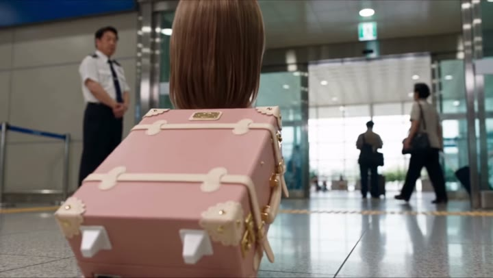
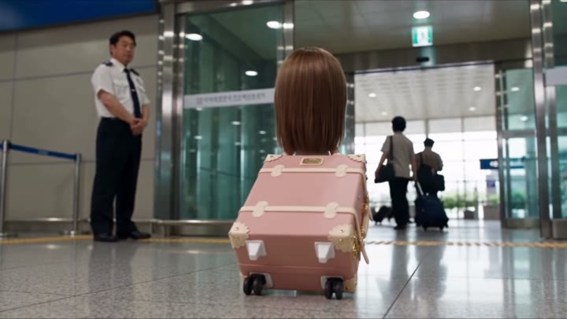
| 샷 크기 | WS 후면 |
|---|---|
| 앵글 | 로우앵글 후면 (캐리어 뒤) |
| 카메라 무빙 | 느린 팔로우(전진 따라가기) |
| 구도 · 피사체 위치 | 중앙 = 캐리어와 캐릭터 뒤통수(캐리어 위로 머리만 보임). 좌측 = 서 있는 경비원. 배경 = 출구 유리문 역광 |
| 연기 · 동작 | 캐리어를 밀고/끌고 출구 쪽으로 퇴장 |
| 배경 · 조명 | 출구 게이트, 밝은 자연광 역광 |
| 전환 | 하드 컷 |
| 사운드 | 캐리어 바퀴 '드르륵' |
| 자막 · 텍스트 | 없음 |
| 편집 의도 (왜 떡상?) | 퇴장 = 서사 종료 신호 |
hyperreal miniature designer-toy photography, cinematic 16:9 frame, shallow depth of field, 85mm macro lens look, soft diffused key light with gentle rim light, creamy bokeh, subtle film grain, Pop Mart / Blythe collectible-doll aesthetic, glossy vinyl-resin skin with soft subsurface scattering, ultra-detailed, 4K. HAMZZI, a chubby anthropomorphic golden-cream Syrian hamster girl designer-toy figure (white muzzle and belly fur, tiny pink nose, small round ears, oversized glossy black doll eyes under big dome eyelids that sit heavy and half-closed in a sassy deadpan look, pink blush cheeks, tiny glossy pink pouty mouth, chibi 1:1.6 head-to-body proportion, little pink paws with tiny fingers, fine soft fur texture over vinyl-toy volume). Outfit: white lace camisole with thin straps, tiny silver heart necklace, grey ruffled tiered mini skirt, white fabric headband with tiny pink hearts, white scrunchie on right wrist, pink crystal bead bracelet on left wrist, mint-green chunky platform sandals with pink bows. Scene: low rear wide shot behind the pink suitcase rolling toward bright glass exit doors, only the back of HAMZZI's head visible above it, an airport guard standing on the left, backlit.
text, watermark, logo, subtitles, extra fingers, fused paws, human face on the character, realistic human skin on the character, deformed eyes, asymmetrical eyes, flat cartoon shading, blurry subject, low resolution
[1.8s, 16:9, 30fps] Camera: low tracking follow from behind. Action beats: the suitcase and HAMZZI roll away from the camera toward the exit. Audio (native, no music): suitcase wheels rolling on tile. Keep the character identical to the reference image (same fur colour, outfit, proportions). Real-world physics, tactile miniature scale, no morphing of the face, no extra limbs. No background music.
WS 측면
23.400s → 25.900s · 2.50초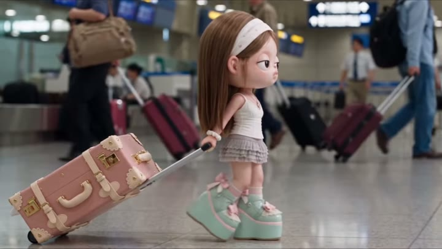
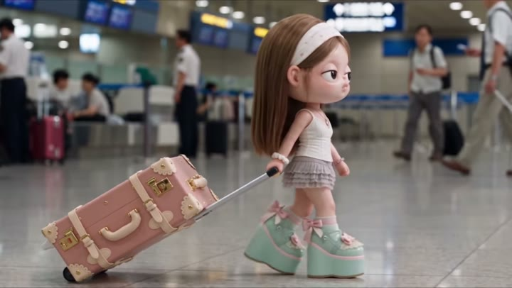
| 샷 크기 | WS 측면 |
|---|---|
| 앵글 | 바닥 로우앵글 측면 |
| 카메라 무빙 | 트럭(옆으로 나란히 따라감) |
| 구도 · 피사체 위치 | 캐릭터 오른쪽 1/3, 화면 왼→오 방향으로 걸음. 캐리어는 왼쪽 뒤로 기울어 끌려옴. 배경 여행객 블러 |
| 연기 · 동작 | 입을 'o'로 모으고 휘파람 불며 당당하게 캐리어 끌고 걷기 |
| 배경 · 조명 | modern Korean international airport immigration hall, glossy terrazzo floor, ceiling downlights, blue departure board, travellers softly blurred in the background, 출국장 체크인 카운터 |
| 전환 | 하드 컷 |
| 사운드 | 휘파람 멜로디 + 바퀴 소리 (-10dB) |
| 자막 · 텍스트 | 없음 |
| 편집 의도 (왜 떡상?) | '아무 일 없었다는 듯' 뻔뻔함 = 2차 웃음 |
hyperreal miniature designer-toy photography, cinematic 16:9 frame, shallow depth of field, 85mm macro lens look, soft diffused key light with gentle rim light, creamy bokeh, subtle film grain, Pop Mart / Blythe collectible-doll aesthetic, glossy vinyl-resin skin with soft subsurface scattering, ultra-detailed, 4K. HAMZZI, a chubby anthropomorphic golden-cream Syrian hamster girl designer-toy figure (white muzzle and belly fur, tiny pink nose, small round ears, oversized glossy black doll eyes under big dome eyelids that sit heavy and half-closed in a sassy deadpan look, pink blush cheeks, tiny glossy pink pouty mouth, chibi 1:1.6 head-to-body proportion, little pink paws with tiny fingers, fine soft fur texture over vinyl-toy volume). Outfit: white lace camisole with thin straps, tiny silver heart necklace, grey ruffled tiered mini skirt, white fabric headband with tiny pink hearts, white scrunchie on right wrist, pink crystal bead bracelet on left wrist, mint-green chunky platform sandals with pink bows. Face state: no makeup: small plain beady eyes, no lashes, slightly puffy lids, same pout, lips pursed whistling. Scene: low side tracking shot, HAMZZI walking confidently while pulling the pink suitcase behind her by its handle, lips pursed in an 'o' whistling, modern Korean international airport immigration hall, glossy terrazzo floor, ceiling downlights, blue departure board, travellers softly blurred in the background.
text, watermark, logo, subtitles, extra fingers, fused paws, human face on the character, realistic human skin on the character, deformed eyes, asymmetrical eyes, flat cartoon shading, blurry subject, low resolution
[2.5s, 16:9, 30fps] Camera: low side truck move keeping pace with her. Action beats: she struts pulling the suitcase, whistling a carefree tune, head bobbing. Audio (native, no music): cute whistled melody, suitcase wheels, busy terminal ambience. Keep the character identical to the reference image (same fur colour, outfit, proportions). Real-world physics, tactile miniature scale, no morphing of the face, no extra limbs. No background music.
CU 정면
25.900s → 29.667s · 3.77초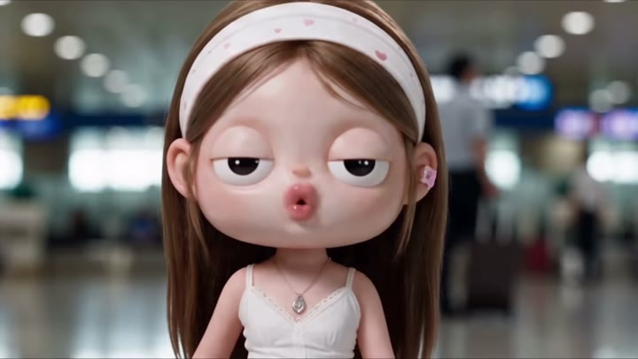
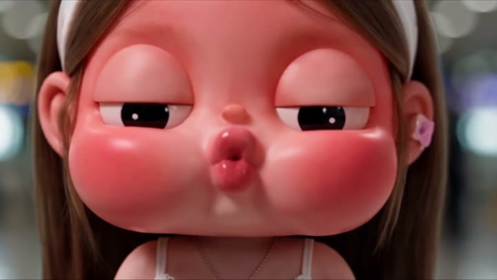
| 샷 크기 | CU 정면 |
|---|---|
| 앵글 | 정면 아이레벨 |
| 카메라 무빙 | 느린 푸시인 (얼굴이 점점 커짐) |
| 구도 · 피사체 위치 | 얼굴 정중앙 대칭. 배경 터미널 보케(원형 빛망울) |
| 연기 · 동작 | 휘파람 → 콧노래 '흠~' → 숨 참듯 볼을 점점 부풀림 → 볼이 빨갛게 달아오르고 눈 감았다 뜸 |
| 배경 · 조명 | 터미널 보케, 따뜻한 조명 |
| 전환 | 하드 컷 → 블랙 |
| 사운드 | 휘파람 → 콧노래 → 29.6s 볼 '뽁' 팝 |
| 자막 · 텍스트 | 없음 |
| 편집 의도 (왜 떡상?) | 엔딩 '버튼' 개그 + 얼굴 클로즈업으로 끝내 캐릭터 애착 형성 |
hyperreal miniature designer-toy photography, cinematic 16:9 frame, shallow depth of field, 85mm macro lens look, soft diffused key light with gentle rim light, creamy bokeh, subtle film grain, Pop Mart / Blythe collectible-doll aesthetic, glossy vinyl-resin skin with soft subsurface scattering, ultra-detailed, 4K. HAMZZI, a chubby anthropomorphic golden-cream Syrian hamster girl designer-toy figure (white muzzle and belly fur, tiny pink nose, small round ears, oversized glossy black doll eyes under big dome eyelids that sit heavy and half-closed in a sassy deadpan look, pink blush cheeks, tiny glossy pink pouty mouth, chibi 1:1.6 head-to-body proportion, little pink paws with tiny fingers, fine soft fur texture over vinyl-toy volume). Outfit: white lace camisole with thin straps, tiny silver heart necklace, grey ruffled tiered mini skirt, white fabric headband with tiny pink hearts, white scrunchie on right wrist, pink crystal bead bracelet on left wrist, mint-green chunky platform sandals with pink bows. Face state: no makeup: small plain beady eyes, no lashes, slightly puffy lids, same pout, cheeks starting to puff. Scene: frontal centered close-up of HAMZZI, modern Korean international airport immigration hall, glossy terrazzo floor, ceiling downlights, blue departure board, travellers softly blurred in the background as round bokeh, lips pursed.
text, watermark, logo, subtitles, extra fingers, fused paws, human face on the character, realistic human skin on the character, deformed eyes, asymmetrical eyes, flat cartoon shading, blurry subject, low resolution
[3.8s, 16:9, 30fps] Camera: slow push-in, centered. Action beats: she whistles, then hums, then holds her breath so her cheeks inflate bigger and bigger and flush bright red, eyes squeeze shut then half-open. Audio (native, no music): whistle, humming 'mmm~', final tiny cheek pop. Keep the character identical to the reference image (same fur colour, outfit, proportions). Real-world physics, tactile miniature scale, no morphing of the face, no extra limbs. No background music.
BLACK
29.667s → 30.033s · 0.37초| 샷 크기 | BLACK |
|---|---|
| 앵글 | - |
| 카메라 무빙 | - |
| 구도 · 피사체 위치 | 전체 검정 |
| 연기 · 동작 | 하드 컷 블랙 0.37초 |
| 배경 · 조명 | #000 |
| 전환 | (영상 끝 → 루프) |
| 사운드 | 팝 여운 끊김 |
| 자막 · 텍스트 | 없음 |
| 편집 의도 (왜 떡상?) | 끝을 뚝 끊어 반복 재생 유도 |
1위-5. 사운드 디자인 (BGM · 효과음)
결론: 배경음악 없음(스펙트로그램상 지속 멜로디 없음). 공항 룸톤(-32dB 중앙값) 위에 폴리 효과음 + 캐릭터 무언 보컬(흥!, 휘파람, 흠~)만 사용. 도장·캐리어 소리를 -8dB까지 크게 강조.
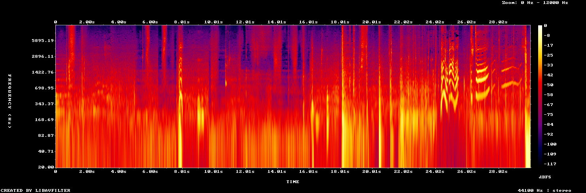
원본 오디오 스펙트로그램(0–12kHz). 세로 밝은 줄 = 효과음 히트, 물결 모양 가로 줄 = 목소리/휘파람. 여러 음이 계속 겹치는 음악 패턴이 없어서 BGM이 없다고 판단했습니다. 대사 자막은 음성 인식 키 오류로 추출하지 못했습니다(화면 자막만 반영).
| 시점 | 세기 | 효과음 (재현용) |
|---|---|---|
| 7.7–8.0 | -8dB | 속눈썹을 카운터에 '톡' 내려놓음 + 짧은 콧방귀 '흥!' |
| 9.0–9.3 | -18dB | 리무버 병/화장솜 사락 소리 |
| 10.7–10.9 | 약 | 리무버 물방울 '똑' (고음 점, ASMR) |
| 16.2–16.3 | -15dB | 여권 표지 '탁' 들어올림 |
| 17.1–17.3 | -17dB | 심사관 헛숨 '헉' |
| 18.0–18.6 | -8dB | 도장 '쾅' (가장 큰 히트) |
| 20.4–20.6 | -9dB | 캐리어에 털썩 앉음/내림 |
| 21.8–22.7 | -13dB | 캐리어 바퀴 굴러가는 소리 |
| 24.3–25.5 | -10dB | 휘파람 멜로디 (지그재그 하모닉) |
| 26.2–27.3 | -10dB | 콧노래 '흠~' 길게 |
| 29.6–30.0 | -8dB | 볼 '뽁' 터지는 팝 → 블랙 |
1위-6. 편집 — FFmpeg (컷 길이 원본과 동일)
생성한 클립을 clips/s01.mp4 …로 저장 → Git Bash에서 실행. 컷 길이를 원본과 똑같이 자르고 이어붙인 뒤 전환·마무리·음량 정규화와 9:16 버전까지 만듭니다.
#!/usr/bin/env bash
# A2O May - Shijie 💜 Immigration Inspection — remake assembly script (auto-generated from measured cut list)
# Put generated clips in ./clips as s01.mp4, s02.mp4 ... (one file per shot, any length >= target).
# Stills (cover frame / no-video shots) go in ./clips as sNN.png.
set -euo pipefail
W=1920; H=1080; FPS=30
mkdir -p work
norm() { # $1=input $2=exact duration $3=output -> exact-length H.264 + 48k stereo AAC
local in="$1" dur="$2" out="$3" vf="scale=$W:$H:force_original_aspect_ratio=increase,crop=$W:$H,fps=$FPS,setsar=1,format=yuv420p"
if [[ "$in" == *.png ]]; then
ffmpeg -nostdin -y -loop 1 -i "$in" -f lavfi -i anullsrc=r=48000:cl=stereo -t "$dur" -vf "$vf" \
-map 0:v -map 1:a -c:v libx264 -crf 16 -preset slow -c:a aac -b:a 192k "$out"
elif ffprobe -v error -select_streams a -show_entries stream=index -of csv=p=0 "$in" | grep -q .; then
ffmpeg -nostdin -y -i "$in" -t "$dur" -vf "$vf" -af "aresample=48000,apad" \
-map 0:v:0 -map 0:a:0 -c:v libx264 -crf 16 -preset slow -c:a aac -b:a 192k -ac 2 "$out"
else # model returned silent video -> add silent track so concat never breaks
ffmpeg -nostdin -y -i "$in" -f lavfi -i anullsrc=r=48000:cl=stereo -t "$dur" -vf "$vf" \
-map 0:v:0 -map 1:a -c:v libx264 -crf 16 -preset slow -c:a aac -b:a 192k "$out"
fi
}
# 1) 컷 길이를 원본과 프레임 단위로 동일하게 맞춤 (측정값)
norm clips/s01.mp4 1.467 work/n01.mp4 # 0.000-1.467 MS
norm clips/s02.mp4 2.0 work/n02.mp4 # 1.467-3.467 OTS / INSERT
norm clips/s03.mp4 1.533 work/n03.mp4 # 3.467-5.000 OTS (리버스)
norm clips/s04.mp4 1.467 work/n04.mp4 # 5.000-6.467 CU
norm clips/s05.mp4 1.133 work/n05.mp4 # 6.467-7.600 CU
norm clips/s06.mp4 2.067 work/n06.mp4 # 7.600-9.667 MS (OTS 전경)
norm clips/s07.mp4 1.733 work/n07.mp4 # 9.667-11.400 INSERT
norm clips/s08.mp4 2.2 work/n08.mp4 # 11.400-13.600 CU
norm clips/s09.mp4 2.433 work/n09.mp4 # 13.600-16.033 CU
norm clips/s10.mp4 1.834 work/n10.mp4 # 16.033-17.867 MS (비교 구도)
norm clips/s11.mp4 1.866 work/n11.mp4 # 17.867-19.733 INSERT (매크로)
norm clips/s12.mp4 0.367 work/n12.mp4 # 19.733-20.100 INSERT
norm clips/s13.mp4 1.5 work/n13.mp4 # 20.100-21.600 WS 로우앵글
norm clips/s14.mp4 1.8 work/n14.mp4 # 21.600-23.400 WS 후면
norm clips/s15.mp4 2.5 work/n15.mp4 # 23.400-25.900 WS 측면
norm clips/s16.mp4 3.767 work/n16.mp4 # 25.900-29.667 CU 정면
# s17 BLACK 0.366s -> finishing 단계에서 처리
# 2) 하드 컷 이어붙이기 (재인코딩 없음)
cat > work/list.txt <<'EOF'
file 'n01.mp4'
file 'n02.mp4'
file 'n03.mp4'
file 'n04.mp4'
file 'n05.mp4'
file 'n06.mp4'
file 'n07.mp4'
file 'n08.mp4'
file 'n09.mp4'
file 'n10.mp4'
file 'n11.mp4'
file 'n12.mp4'
file 'n13.mp4'
file 'n14.mp4'
file 'n15.mp4'
file 'n16.mp4'
EOF
ffmpeg -nostdin -y -f concat -safe 0 -i work/list.txt -c copy work/joined.mp4
# 3) 마무리: 끝에 0.367초 하드 블랙(원본 29.667s) + 음량 정규화(-14 LUFS, 릴스 권장)
ffmpeg -nostdin -y -i work/joined.mp4 \
-vf "tpad=stop_mode=add:stop_duration=0.367:color=black" \
-af "apad=pad_dur=0.367,loudnorm=I=-14:TP=-1.0:LRA=11" \
-c:v libx264 -crf 17 -preset slow -c:a aac -b:a 192k -shortest -movflags +faststart final_16x9.mp4
# (선택) 마지막 CU(s16)가 정지 화면으로 나왔다면 원본처럼 느린 푸시인을 디지털로 추가:
# ffmpeg -i work/n16.mp4 -vf "zoompan=z='min(1+0.0012*on,1.12)':d=1:x='iw/2-(iw/zoom/2)':y='ih/2-(ih/zoom/2)':s=1920x1080:fps=30" -c:a copy work/n16.mp4.tmp.mp4
# 4) (선택) 9:16 릴스 세로 버전 — 블러 배경 + 가운데 16:9 원본
ffmpeg -nostdin -y -i final_16x9.mp4 -filter_complex "[0:v]split[a][b];[a]scale=1080:1920:force_original_aspect_ratio=increase,crop=1080:1920,boxblur=40:4,eq=brightness=-0.06[bg];[b]scale=1080:-2[fg];[bg][fg]overlay=(W-w)/2:(H-h)/2" -c:v libx264 -crf 17 -preset slow -c:a copy final_9x16.mp4
1위-7. 편집 — HyperFrames (자막 · 전환 · 엔드카드 포함 1파일)
/hyperframes 스킬을 먼저 읽고 진행해줘. 목표: picassong 1위 릴스(DdBhX7ah6GR) 구조를 햄찌 캐릭터로 똑같이 재현한 16:9 1920x1080 30fps 영상 1편. - 입력: ./clips/sNN.mp4 (내가 생성한 샷 클립), 컷 타임라인(원본 실측): s01 0.000-1.467s; s02 1.467-3.467s; s03 3.467-5.000s; s04 5.000-6.467s; s05 6.467-7.600s; s06 7.600-9.667s; s07 9.667-11.400s; s08 11.400-13.600s; s09 13.600-16.033s; s10 16.033-17.867s; s11 17.867-19.733s; s12 19.733-20.100s; s13 20.100-21.600s; s14 21.600-23.400s; s15 23.400-25.900s; s16 25.900-29.667s - 모든 컷은 하드 컷, 각 클립은 data-media-start=0부터 위 길이만큼만 사용. 클립 오디오는 별도 <audio id>로 넣고 video는 muted. - 첨부한 index.html 초안을 기준으로 하고, 타이밍 숫자는 절대 바꾸지 마. - 완료 조건: npx hyperframes check 0 findings → 중간 지점 snapshot으로 눈 확인 → 내가 승인하면 render. - 🔴 승인 전 render/업로드 금지. clips 폴더 밖 파일 수정 금지.
<!doctype html>
<html lang="ko">
<head>
<meta charset="UTF-8" />
<meta name="viewport" content="width=1920, height=1080" />
<title>DdBhX7ah6GR remake</title>
<script src="https://cdn.jsdelivr.net/npm/gsap@3.14.2/dist/gsap.min.js"></script>
<style>
body { margin: 0; background: #000; }
#root { position: relative; width: 100%; height: 100%; overflow: hidden; background: #000; }
.shot { position: absolute; inset: 0; width: 100%; height: 100%; object-fit: cover; }
</style>
</head>
<body>
<div id="root" data-composition-id="main" data-start="0" data-width="1920" data-height="1080" data-duration="30.034">
<video id="s01" class="clip shot" src="clips/s01.mp4" data-start="0.000" data-duration="1.467" data-media-start="0" data-track-index="0" muted playsinline></video>
<video id="s02" class="clip shot" src="clips/s02.mp4" data-start="1.467" data-duration="2.0" data-media-start="0" data-track-index="0" muted playsinline></video>
<video id="s03" class="clip shot" src="clips/s03.mp4" data-start="3.467" data-duration="1.533" data-media-start="0" data-track-index="0" muted playsinline></video>
<video id="s04" class="clip shot" src="clips/s04.mp4" data-start="5.000" data-duration="1.467" data-media-start="0" data-track-index="0" muted playsinline></video>
<video id="s05" class="clip shot" src="clips/s05.mp4" data-start="6.467" data-duration="1.133" data-media-start="0" data-track-index="0" muted playsinline></video>
<video id="s06" class="clip shot" src="clips/s06.mp4" data-start="7.600" data-duration="2.067" data-media-start="0" data-track-index="0" muted playsinline></video>
<video id="s07" class="clip shot" src="clips/s07.mp4" data-start="9.667" data-duration="1.733" data-media-start="0" data-track-index="0" muted playsinline></video>
<video id="s08" class="clip shot" src="clips/s08.mp4" data-start="11.400" data-duration="2.2" data-media-start="0" data-track-index="0" muted playsinline></video>
<video id="s09" class="clip shot" src="clips/s09.mp4" data-start="13.600" data-duration="2.433" data-media-start="0" data-track-index="0" muted playsinline></video>
<video id="s10" class="clip shot" src="clips/s10.mp4" data-start="16.033" data-duration="1.834" data-media-start="0" data-track-index="0" muted playsinline></video>
<video id="s11" class="clip shot" src="clips/s11.mp4" data-start="17.867" data-duration="1.866" data-media-start="0" data-track-index="0" muted playsinline></video>
<video id="s12" class="clip shot" src="clips/s12.mp4" data-start="19.733" data-duration="0.367" data-media-start="0" data-track-index="0" muted playsinline></video>
<video id="s13" class="clip shot" src="clips/s13.mp4" data-start="20.100" data-duration="1.5" data-media-start="0" data-track-index="0" muted playsinline></video>
<video id="s14" class="clip shot" src="clips/s14.mp4" data-start="21.600" data-duration="1.8" data-media-start="0" data-track-index="0" muted playsinline></video>
<video id="s15" class="clip shot" src="clips/s15.mp4" data-start="23.400" data-duration="2.5" data-media-start="0" data-track-index="0" muted playsinline></video>
<video id="s16" class="clip shot" src="clips/s16.mp4" data-start="25.900" data-duration="3.767" data-media-start="0" data-track-index="0" muted playsinline></video>
<audio id="a01" src="clips/s01.mp4" data-start="0.000" data-duration="1.467" data-media-start="0" data-track-index="10" data-volume="1"></audio>
<audio id="a02" src="clips/s02.mp4" data-start="1.467" data-duration="2.0" data-media-start="0" data-track-index="10" data-volume="1"></audio>
<audio id="a03" src="clips/s03.mp4" data-start="3.467" data-duration="1.533" data-media-start="0" data-track-index="10" data-volume="1"></audio>
<audio id="a04" src="clips/s04.mp4" data-start="5.000" data-duration="1.467" data-media-start="0" data-track-index="10" data-volume="1"></audio>
<audio id="a05" src="clips/s05.mp4" data-start="6.467" data-duration="1.133" data-media-start="0" data-track-index="10" data-volume="1"></audio>
<audio id="a06" src="clips/s06.mp4" data-start="7.600" data-duration="2.067" data-media-start="0" data-track-index="10" data-volume="1"></audio>
<audio id="a07" src="clips/s07.mp4" data-start="9.667" data-duration="1.733" data-media-start="0" data-track-index="10" data-volume="1"></audio>
<audio id="a08" src="clips/s08.mp4" data-start="11.400" data-duration="2.2" data-media-start="0" data-track-index="10" data-volume="1"></audio>
<audio id="a09" src="clips/s09.mp4" data-start="13.600" data-duration="2.433" data-media-start="0" data-track-index="10" data-volume="1"></audio>
<audio id="a10" src="clips/s10.mp4" data-start="16.033" data-duration="1.834" data-media-start="0" data-track-index="10" data-volume="1"></audio>
<audio id="a11" src="clips/s11.mp4" data-start="17.867" data-duration="1.866" data-media-start="0" data-track-index="10" data-volume="1"></audio>
<audio id="a12" src="clips/s12.mp4" data-start="19.733" data-duration="0.367" data-media-start="0" data-track-index="10" data-volume="1"></audio>
<audio id="a13" src="clips/s13.mp4" data-start="20.100" data-duration="1.5" data-media-start="0" data-track-index="10" data-volume="1"></audio>
<audio id="a14" src="clips/s14.mp4" data-start="21.600" data-duration="1.8" data-media-start="0" data-track-index="10" data-volume="1"></audio>
<audio id="a15" src="clips/s15.mp4" data-start="23.400" data-duration="2.5" data-media-start="0" data-track-index="10" data-volume="1"></audio>
<audio id="a16" src="clips/s16.mp4" data-start="25.900" data-duration="3.767" data-media-start="0" data-track-index="10" data-volume="1"></audio>
<div id="black" class="clip" data-start="29.667" data-duration="0.367" data-track-index="1" style="position:absolute;inset:0;background:#000"></div>
</div>
<script>
const tl = gsap.timeline({ paused: true });
// 1위는 하드컷만 사용 — 추가 모션 없음 (원본 그대로)
window.__timelines["main"] = tl;
</script>
</body>
</html>
A2O May - Shijie · Going Out
한 줄 스토리
하트 거울 앞 속눈썹 붙이기 실패(툭 떨어짐) → 속눈썹 풀로 강제 고정 → 다음 날 아침 기상, 속눈썹 완벽! 헤어 휙 넘기며 변신 → 거울 보니 또 한쪽이 떨어짐 → 떼어서 버블티에 넣고 그대로 마심.2위-1. 컷 타임라인 (실측 · 클릭하면 해당 샷으로)
컷 시점은 ffmpeg 장면 변화 감지(scene>0.25)로 측정 후, 애매한 구간은 0.1초 단위 프레임으로 직접 확인. 색 블록 폭 = 실제 길이 비율.
| 구간 | 역할 | 내용 |
|---|---|---|
| 0.0–6.9 | SETUP 도전+실패 | 하트 거울 POV 핀셋 속눈썹 → 매크로에서 툭 떨어짐 → 무표정 |
| 6.9–9.6 | HACK 꼼수 | 속눈썹 풀 쭉 → 손가락으로 꾹 눌러 고정 |
| 9.6–13.0 | TIME SKIP 기상 | 수면안대·부스스 머리로 하품 → 눈 뜨니 속눈썹 붙어 있음 |
| 13.0–18.8 | FALSE VICTORY 변신 | 헤어 휘핑 전환 → 똥머리 완성, 도도한 포즈 연속 |
| 18.8–23.0 | RE-FAIL 재실패 | 하트 거울 깜빡 → 한쪽 속눈썹이 반쯤 떨어져 대롱대롱 |
| 23.0–30.0 | ABSURD PAYOFF | 떼어서 버블티에 톡 → 빨대로 쭉 (속눈썹이 빨대로 올라옴) |
2위-2. 떡상 편집 포인트
- 첫 프레임이 '반짝이 하트 거울' = 썸네일 자체가 예쁨 (피드에서 눈에 띔)
- 매크로 ECU(2.6~9.6s)로 속눈썹 붙이기 ASMR — 여성 뷰티 타깃 공감 '이거 진짜 어려움'
- 실패→꼼수→성공한 줄→또 실패 = 기대 배신 2단 구조
- 헤어 휘핑 전환(13.0s)으로 컷 없이 '변신' — 시청 유지율 최고 구간
- 마지막 '버블티에 넣고 마시기'는 예상 불가 엉뚱한 결말 → 댓글 폭발 ('그걸 마셔?')
- 샷 수 7개로 적은 대신 한 샷 안에서 연기가 많음 (롱테이크 + 표정 연기)
- 자막 0개, 소리 최소 → 무음 시청자도 100% 이해
2위-3. 캐릭터 변환 기준 (원본 인형 → 햄찌)
모든 프롬프트는 아래 3개 블록 + 샷별 장면으로 조립돼 있습니다. 다른 동물로 바꿀 때는 CHARACTER 블록만 교체하면 전 샷이 한 번에 바뀝니다. (예: “golden-cream Syrian hamster” → “white Maltese puppy”)
hyperreal miniature designer-toy photography, cinematic 16:9 frame, shallow depth of field, 85mm macro lens look, soft diffused key light with gentle rim light, creamy bokeh, subtle film grain, Pop Mart / Blythe collectible-doll aesthetic, glossy vinyl-resin skin with soft subsurface scattering, ultra-detailed, 4K
HAMZZI, a chubby anthropomorphic golden-cream Syrian hamster girl designer-toy figure (white muzzle and belly fur, tiny pink nose, small round ears, oversized glossy black doll eyes under big dome eyelids that sit heavy and half-closed in a sassy deadpan look, pink blush cheeks, tiny glossy pink pouty mouth, chibi 1:1.6 head-to-body proportion, little pink paws with tiny fingers, fine soft fur texture over vinyl-toy volume)
light-blue striped satin sleep mask with a rhinestone snowflake brooch pushed up on the forehead, messy bed-head fluffy fur tuft on top of the head, blue pinstripe satin pajama shirt
2위-4. 샷별 정밀 분석 + 프롬프트
샷 크기 용어 정리
| ECU | 익스트림 클로즈업 | 눈·손톱 하나만 꽉 차게 (감정/디테일 극대화) |
| CU | 클로즈업 | 얼굴 전체 (표정 리액션) |
| MCU | 미디엄 클로즈업 | 가슴 위 (대사/표정 + 약간의 손동작) |
| MS | 미디엄 샷 | 허리 위 (행동이 보이는 기본 샷) |
| WS | 와이드 샷 | 전신+공간 (상황 설명/이동) |
| OTS | 오버 더 숄더 | 상대 어깨 너머로 찍기 (대면 긴장감) |
| INSERT | 인서트 | 손·소품만 따로 (촉각·ASMR 만족감) |
| POV | 시점 샷 | 캐릭터/거울 시점 (몰입) |
POV (거울) CU
0.000s → 2.623s · 2.62초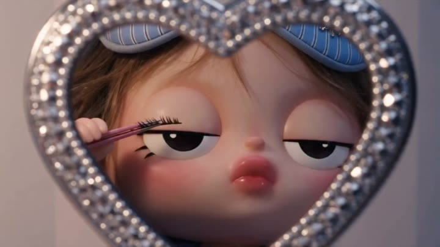
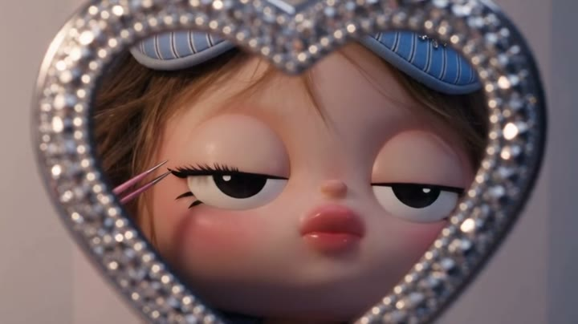
| 샷 크기 | POV (거울) CU |
|---|---|
| 앵글 | 정면, 손거울 너머 |
| 카메라 무빙 | 고정 + 미세 핸드헬드 흔들림 |
| 구도 · 피사체 위치 | 화면 전체를 하트 거울 프레임이 채움. 얼굴은 하트 안 중앙. 핀셋이 왼쪽에서 들어와 캐릭터 오른눈(화면 왼쪽)에 속눈썹을 댐 |
| 연기 · 동작 | 졸린 눈으로 핀셋 속눈썹을 눈꺼풀에 대보는 중. 입은 뾰로통 |
| 배경 · 조명 | 거울 밖은 흐린 라벤더 벽 |
| 전환 | 하드 컷 (거울 → 매크로 확대) |
| 사운드 | 핀셋 '틱' |
| 자막 · 텍스트 | 없음 |
| 편집 의도 (왜 떡상?) | 하트 거울 프레임 = 첫 1초 '예쁨' 훅 + 거울 POV로 '내가 화장하는 느낌' 몰입 |
hyperreal miniature designer-toy photography, cinematic 16:9 frame, shallow depth of field, 85mm macro lens look, soft diffused key light with gentle rim light, creamy bokeh, subtle film grain, Pop Mart / Blythe collectible-doll aesthetic, glossy vinyl-resin skin with soft subsurface scattering, ultra-detailed, 4K. HAMZZI, a chubby anthropomorphic golden-cream Syrian hamster girl designer-toy figure (white muzzle and belly fur, tiny pink nose, small round ears, oversized glossy black doll eyes under big dome eyelids that sit heavy and half-closed in a sassy deadpan look, pink blush cheeks, tiny glossy pink pouty mouth, chibi 1:1.6 head-to-body proportion, little pink paws with tiny fingers, fine soft fur texture over vinyl-toy volume). Outfit: light-blue striped satin sleep mask with a rhinestone snowflake brooch pushed up on the forehead, messy bed-head fluffy fur tuft on top of the head, blue pinstripe satin pajama shirt. Face state: one eye with lash being placed, other eye bare. Scene: seen through a heart-shaped hand mirror whose thick frame is covered in sparkling rhinestones, the mirror frame fills the whole 16:9 screen and her face sits inside the heart; HAMZZI holding pink tweezers with a false eyelash against her right eyelid, sleepy eyes, pout, the blue sleep mask pushed up on her head.
text, watermark, logo, subtitles, extra fingers, fused paws, human face on the character, realistic human skin on the character, deformed eyes, asymmetrical eyes, flat cartoon shading, blurry subject, low resolution
[2.6s, 16:9, 30fps] Camera: static mirror POV with slight handheld sway. Action beats: tweezers bring the false lash to the lid line, she adjusts it twice, blinks slowly. Audio (native, no music): tiny tweezers tick, soft breath. Keep the character identical to the reference image (same fur colour, outfit, proportions). Real-world physics, tactile miniature scale, no morphing of the face, no extra limbs. No background music.
ECU 매크로
2.623s → 6.911s · 4.29초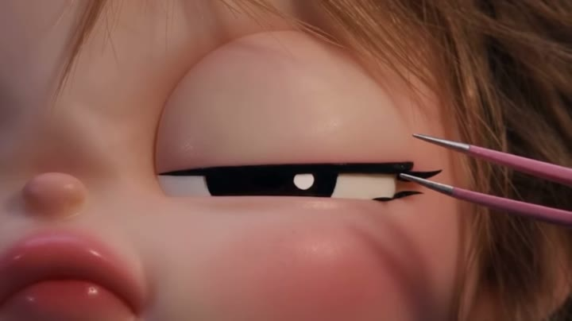
| 샷 크기 | ECU 매크로 |
|---|---|
| 앵글 | 눈 높이 정측면 살짝 |
| 카메라 무빙 | 아주 느린 푸시인 |
| 구도 · 피사체 위치 | 눈 하나가 화면 중앙~오른쪽 크게. 좌하단에 코, 좌측 하단 모서리에 입술 일부. 핀셋은 오른쪽 위에서 들어옴 |
| 연기 · 동작 | 핀셋으로 속눈썹을 라인에 얹음 → 핀셋을 놓자 속눈썹이 스르륵 미끄러져 아래로 툭 떨어짐(5.5s) → 눈을 가늘게 뜨며 체념(6.0s) |
| 배경 · 조명 | (얼굴만) |
| 전환 | 하드 컷 |
| 사운드 | 6.2s 속눈썹 떨어지는 '톡' |
| 자막 · 텍스트 | 없음 |
| 편집 의도 (왜 떡상?) | 매크로 = 뷰티 ASMR 쾌감 + '실패' 순간을 확대해서 웃음 |
hyperreal miniature designer-toy photography, cinematic 16:9 frame, shallow depth of field, 85mm macro lens look, soft diffused key light with gentle rim light, creamy bokeh, subtle film grain, Pop Mart / Blythe collectible-doll aesthetic, glossy vinyl-resin skin with soft subsurface scattering, ultra-detailed, 4K. HAMZZI, a chubby anthropomorphic golden-cream Syrian hamster girl designer-toy figure (white muzzle and belly fur, tiny pink nose, small round ears, oversized glossy black doll eyes under big dome eyelids that sit heavy and half-closed in a sassy deadpan look, pink blush cheeks, tiny glossy pink pouty mouth, chibi 1:1.6 head-to-body proportion, little pink paws with tiny fingers, fine soft fur texture over vinyl-toy volume). Outfit: light-blue striped satin sleep mask with a rhinestone snowflake brooch pushed up on the forehead, messy bed-head fluffy fur tuft on top of the head, blue pinstripe satin pajama shirt. Face state: sleepy half-lidded. Scene: extreme macro close-up of one of HAMZZI's big glossy doll eyes filling the frame, pink tweezers placing a long black false eyelash on the lid line, nose tip at the left edge, glossy lips at the bottom-left corner.
text, watermark, logo, subtitles, extra fingers, fused paws, human face on the character, realistic human skin on the character, deformed eyes, asymmetrical eyes, flat cartoon shading, blurry subject, low resolution
[4.3s, 16:9, 30fps] Camera: macro, very slow push-in. Action beats: tweezers set the lash on the lid, let go; the lash slowly slides down the eyeball and drops off below the eye; the eyelid lowers into an unimpressed flat squint. Audio (native, no music): tiny drop tap, silence. Keep the character identical to the reference image (same fur colour, outfit, proportions). Real-world physics, tactile miniature scale, no morphing of the face, no extra limbs. No background music.
ECU 매크로
6.911s → 8.285s · 1.37초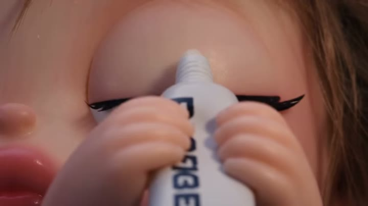
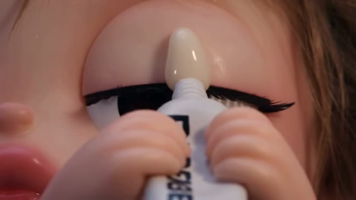
| 샷 크기 | ECU 매크로 |
|---|---|
| 앵글 | 동일 눈 정면 |
| 카메라 무빙 | 고정 |
| 구도 · 피사체 위치 | 눈꺼풀 중앙, 양 앞발이 흰 튜브를 쥐고 노즐을 눈꺼풀에 댐 (튜브가 화면 하단 중앙에서 올라옴) |
| 연기 · 동작 | 속눈썹 풀(흰 튜브)을 눈꺼풀에 짜서 바름 |
| 배경 · 조명 | (얼굴만) |
| 전환 | 하드 컷 (점프컷) |
| 사운드 | 튜브 '찌익' |
| 자막 · 텍스트 | 튜브 글자는 판독 불가 → 자체 브랜드/무지로 대체 |
| 편집 의도 (왜 떡상?) | '꼼수' 등장 = 행동 에스컬레이션 |
hyperreal miniature designer-toy photography, cinematic 16:9 frame, shallow depth of field, 85mm macro lens look, soft diffused key light with gentle rim light, creamy bokeh, subtle film grain, Pop Mart / Blythe collectible-doll aesthetic, glossy vinyl-resin skin with soft subsurface scattering, ultra-detailed, 4K. HAMZZI, a chubby anthropomorphic golden-cream Syrian hamster girl designer-toy figure (white muzzle and belly fur, tiny pink nose, small round ears, oversized glossy black doll eyes under big dome eyelids that sit heavy and half-closed in a sassy deadpan look, pink blush cheeks, tiny glossy pink pouty mouth, chibi 1:1.6 head-to-body proportion, little pink paws with tiny fingers, fine soft fur texture over vinyl-toy volume). Outfit: light-blue striped satin sleep mask with a rhinestone snowflake brooch pushed up on the forehead, messy bed-head fluffy fur tuft on top of the head, blue pinstripe satin pajama shirt. Face state: eye half closed. Scene: extreme macro of HAMZZI's closed eyelid, both little paws squeezing a white lash-glue tube whose nozzle dabs glue along the lid line, tube rising from the bottom centre of the frame.
text, watermark, logo, subtitles, extra fingers, fused paws, human face on the character, realistic human skin on the character, deformed eyes, asymmetrical eyes, flat cartoon shading, blurry subject, low resolution
[1.4s, 16:9, 30fps] Camera: static macro. Action beats: the paws squeeze the tube, a pearl of glue comes out and is dabbed along the lid. Audio (native, no music): squeezy tube squish. Keep the character identical to the reference image (same fur colour, outfit, proportions). Real-world physics, tactile miniature scale, no morphing of the face, no extra limbs. No background music.
ECU 매크로
8.285s → 9.617s · 1.33초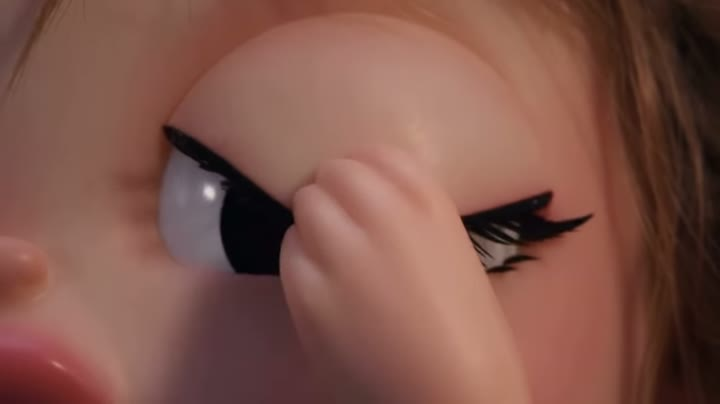
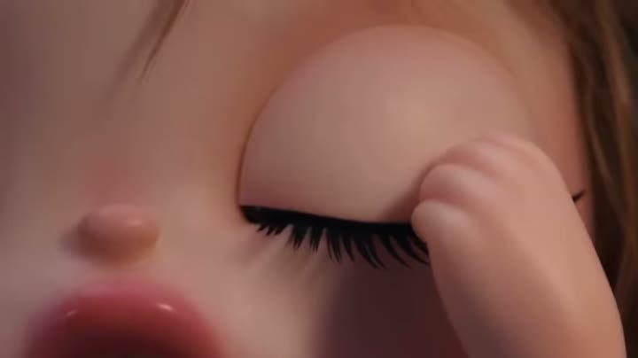
| 샷 크기 | ECU 매크로 |
|---|---|
| 앵글 | 동일 |
| 카메라 무빙 | 고정 |
| 구도 · 피사체 위치 | 눈 감긴 상태, 앞발 하나가 눈꺼풀을 꾹 누름 |
| 연기 · 동작 | 손가락으로 눈꺼풀+속눈썹을 꾹 눌러 고정 (눈 감김) |
| 배경 · 조명 | (얼굴만) |
| 전환 | 하드 컷 → 장소 점프(침실 아침) |
| 사운드 | '꾹' + 작은 앓는 소리 |
| 자막 · 텍스트 | 없음 |
| 편집 의도 (왜 떡상?) | 다음 컷 '기상'과 대비되는 '눈 감은' 마무리 = 자연스러운 시간 점프 |
hyperreal miniature designer-toy photography, cinematic 16:9 frame, shallow depth of field, 85mm macro lens look, soft diffused key light with gentle rim light, creamy bokeh, subtle film grain, Pop Mart / Blythe collectible-doll aesthetic, glossy vinyl-resin skin with soft subsurface scattering, ultra-detailed, 4K. HAMZZI, a chubby anthropomorphic golden-cream Syrian hamster girl designer-toy figure (white muzzle and belly fur, tiny pink nose, small round ears, oversized glossy black doll eyes under big dome eyelids that sit heavy and half-closed in a sassy deadpan look, pink blush cheeks, tiny glossy pink pouty mouth, chibi 1:1.6 head-to-body proportion, little pink paws with tiny fingers, fine soft fur texture over vinyl-toy volume). Outfit: light-blue striped satin sleep mask with a rhinestone snowflake brooch pushed up on the forehead, messy bed-head fluffy fur tuft on top of the head, blue pinstripe satin pajama shirt. Face state: eye closed, lash attached. Scene: extreme macro, HAMZZI's paw pressing firmly on her closed eyelid with the false lash glued on.
text, watermark, logo, subtitles, extra fingers, fused paws, human face on the character, realistic human skin on the character, deformed eyes, asymmetrical eyes, flat cartoon shading, blurry subject, low resolution
[1.3s, 16:9, 30fps] Camera: static macro. Action beats: the paw presses and holds the eyelid down, trembling slightly. Audio (native, no music): soft press, tiny strained 'mm' vocal. Keep the character identical to the reference image (same fur colour, outfit, proportions). Real-world physics, tactile miniature scale, no morphing of the face, no extra limbs. No background music.
MCU 정면
9.617s → 13.000s · 3.38초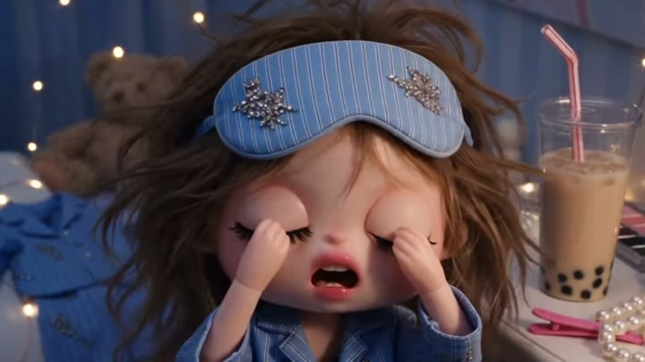
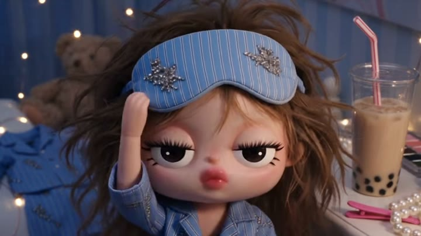
| 샷 크기 | MCU 정면 |
|---|---|
| 앵글 | 정면 아이레벨 |
| 카메라 무빙 | 고정 |
| 구도 · 피사체 위치 | 캐릭터 중앙, 머리 위 수면안대가 상단 1/3. 오른쪽 = 버블티 컵(핑크 빨대), 왼쪽 = 곰인형·파자마 보케 |
| 연기 · 동작 | 부스스한 머리로 양손 눈 비비며 하품(9.6–11s) → 눈 뜨니 속눈썹 완벽(11.5s) → 볼 톡톡 → 안대 쓸어올림 → 머리를 휙 돌림(13.0s) |
| 배경 · 조명 | cosy girly bedroom at night: warm fairy-light bokeh, a brown teddy bear on a light-blue bed, a folded blue pinstripe pajama set, a white vanity desk with an iced brown-sugar boba milk tea (pink straw), pearl strands and pink hair clips, a bulb-lit vanity mirror on the right |
| 전환 | ★ 헤어 휘핑 전환 (13.0s: 머리카락이 화면을 덮으며 스타일 변신) |
| 사운드 | 하품 '하아암' → 볼 톡톡 → '슈욱' |
| 자막 · 텍스트 | 없음 |
| 편집 의도 (왜 떡상?) | 시간 점프를 자막 없이 '수면안대+하품'으로 설명 |
hyperreal miniature designer-toy photography, cinematic 16:9 frame, shallow depth of field, 85mm macro lens look, soft diffused key light with gentle rim light, creamy bokeh, subtle film grain, Pop Mart / Blythe collectible-doll aesthetic, glossy vinyl-resin skin with soft subsurface scattering, ultra-detailed, 4K. HAMZZI, a chubby anthropomorphic golden-cream Syrian hamster girl designer-toy figure (white muzzle and belly fur, tiny pink nose, small round ears, oversized glossy black doll eyes under big dome eyelids that sit heavy and half-closed in a sassy deadpan look, pink blush cheeks, tiny glossy pink pouty mouth, chibi 1:1.6 head-to-body proportion, little pink paws with tiny fingers, fine soft fur texture over vinyl-toy volume). Outfit: light-blue striped satin sleep mask with a rhinestone snowflake brooch pushed up on the forehead, messy bed-head fluffy fur tuft on top of the head, blue pinstripe satin pajama shirt. Face state: eyes closed, lashes attached. Scene: medium close-up, HAMZZI just woke up, very messy fluffy bed-head fur, rubbing her eyes with both paws while yawning wide, cosy girly bedroom at night: warm fairy-light bokeh, a brown teddy bear on a light-blue bed, a folded blue pinstripe pajama set, a white vanity desk with an iced brown-sugar boba milk tea (pink straw), pearl strands and pink hair clips, a bulb-lit vanity mirror on the right.
text, watermark, logo, subtitles, extra fingers, fused paws, human face on the character, realistic human skin on the character, deformed eyes, asymmetrical eyes, flat cartoon shading, blurry subject, low resolution
[3.4s, 16:9, 30fps] Camera: static frontal. Action beats: she rubs both eyes and yawns widely, opens her eyes revealing perfect long lashes, pats her cheeks, pushes the sleep mask up, then whips her head sideways so fluffy fur/hair fills the frame. Audio (native, no music): big cute yawn, cheek pats, whoosh. Keep the character identical to the reference image (same fur colour, outfit, proportions). Real-world physics, tactile miniature scale, no morphing of the face, no extra limbs. No background music.
MCU 정면
13.000s → 18.818s · 5.82초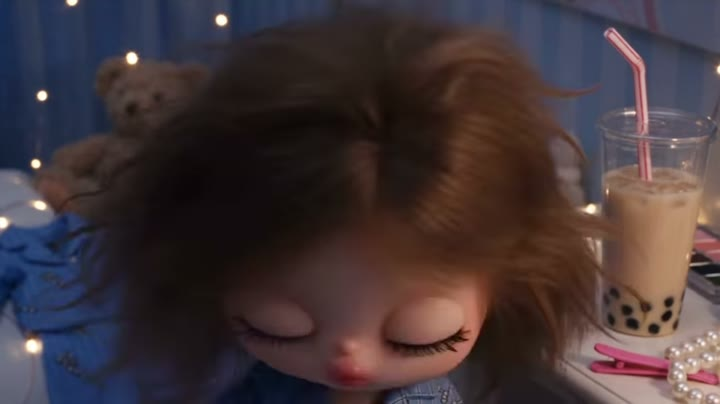
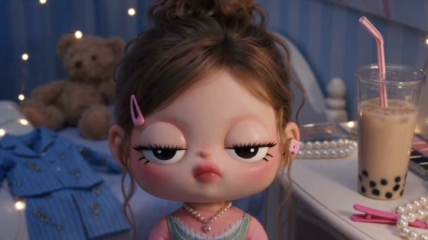
| 샷 크기 | MCU 정면 |
|---|---|
| 앵글 | 정면 아이레벨 (앞 샷과 같은 구도 = 매치컷) |
| 카메라 무빙 | 고정 |
| 구도 · 피사체 위치 | 앞 샷과 캐릭터 위치·배경 동일 → 헤어·옷만 바뀜. 오른쪽 버블티 고정 |
| 연기 · 동작 | 똥머리+핑크 핀 완성 → 볼에 손 → 좌우 곁눈질·고개 까딱 도도 포즈 연속 |
| 배경 · 조명 | cosy girly bedroom at night: warm fairy-light bokeh, a brown teddy bear on a light-blue bed, a folded blue pinstripe pajama set, a white vanity desk with an iced brown-sugar boba milk tea (pink straw), pearl strands and pink hair clips, a bulb-lit vanity mirror on the right |
| 전환 | 하드 컷 |
| 사운드 | 콧노래 '흥~' |
| 자막 · 텍스트 | 없음 |
| 편집 의도 (왜 떡상?) | '변신 성공' 쾌감 + 캐릭터 매력 어필 구간 |
hyperreal miniature designer-toy photography, cinematic 16:9 frame, shallow depth of field, 85mm macro lens look, soft diffused key light with gentle rim light, creamy bokeh, subtle film grain, Pop Mart / Blythe collectible-doll aesthetic, glossy vinyl-resin skin with soft subsurface scattering, ultra-detailed, 4K. HAMZZI, a chubby anthropomorphic golden-cream Syrian hamster girl designer-toy figure (white muzzle and belly fur, tiny pink nose, small round ears, oversized glossy black doll eyes under big dome eyelids that sit heavy and half-closed in a sassy deadpan look, pink blush cheeks, tiny glossy pink pouty mouth, chibi 1:1.6 head-to-body proportion, little pink paws with tiny fingers, fine soft fur texture over vinyl-toy volume). Outfit: fur tuft neatly tied in a small top bun with a pink hair clip, tiny pink heart ear stud, pink long-sleeve top under a mint knit vest, short pearl necklace. Face state: long black false eyelashes, sleepy heavy half-lidded eyes, rosy cheeks, glossy pout. Scene: same framing as the previous shot, HAMZZI now fully styled, posing with a smug sideways glance, cosy girly bedroom at night: warm fairy-light bokeh, a brown teddy bear on a light-blue bed, a folded blue pinstripe pajama set, a white vanity desk with an iced brown-sugar boba milk tea (pink straw), pearl strands and pink hair clips, a bulb-lit vanity mirror on the right.
text, watermark, logo, subtitles, extra fingers, fused paws, human face on the character, realistic human skin on the character, deformed eyes, asymmetrical eyes, flat cartoon shading, blurry subject, low resolution
[5.8s, 16:9, 30fps] Camera: static frontal, identical framing to the previous shot. Action beats: she lands from a head whip into the styled look, touches her cheeks, glances left then right with sassy head tilts, smug. Audio (native, no music): confident little hum. Keep the character identical to the reference image (same fur colour, outfit, proportions). Real-world physics, tactile miniature scale, no morphing of the face, no extra limbs. No background music.
POV (거울) CU
18.818s → 22.981s · 4.16초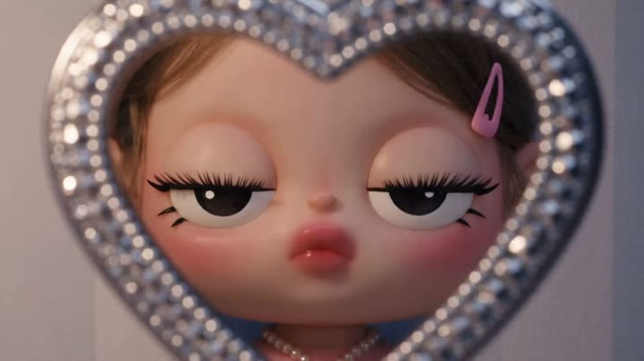
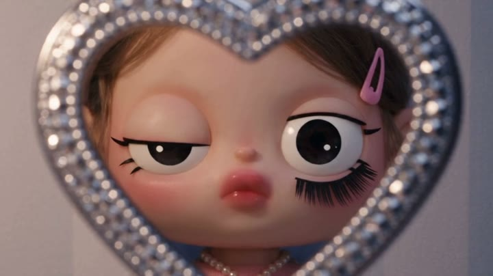
| 샷 크기 | POV (거울) CU |
|---|---|
| 앵글 | 정면 거울 너머 |
| 카메라 무빙 | 고정 |
| 구도 · 피사체 위치 | 오프닝과 같은 하트 거울 구도(북엔드). 캐릭터 왼눈(화면 오른쪽)의 속눈썹이 떨어져 볼에 대롱 |
| 연기 · 동작 | 천천히 눈 감았다 뜸(19.5s) → 한쪽 속눈썹이 반쯤 떨어져 볼 위로 매달림 → 그 눈만 동그랗게 뜬 채 멈춤 |
| 배경 · 조명 | 라벤더 벽 |
| 전환 | 하드 컷 |
| 사운드 | 정적 + 미세 '어?' |
| 자막 · 텍스트 | 없음 |
| 편집 의도 (왜 떡상?) | 오프닝 거울 재등장 = 구조적 대칭(북엔드) + '또 떨어짐' 반전 |
hyperreal miniature designer-toy photography, cinematic 16:9 frame, shallow depth of field, 85mm macro lens look, soft diffused key light with gentle rim light, creamy bokeh, subtle film grain, Pop Mart / Blythe collectible-doll aesthetic, glossy vinyl-resin skin with soft subsurface scattering, ultra-detailed, 4K. HAMZZI, a chubby anthropomorphic golden-cream Syrian hamster girl designer-toy figure (white muzzle and belly fur, tiny pink nose, small round ears, oversized glossy black doll eyes under big dome eyelids that sit heavy and half-closed in a sassy deadpan look, pink blush cheeks, tiny glossy pink pouty mouth, chibi 1:1.6 head-to-body proportion, little pink paws with tiny fingers, fine soft fur texture over vinyl-toy volume). Outfit: fur tuft neatly tied in a small top bun with a pink hair clip, tiny pink heart ear stud, pink long-sleeve top under a mint knit vest, short pearl necklace. Face state: asymmetric: one wide eye, one sleepy eye. Scene: seen through a heart-shaped hand mirror whose thick frame is covered in sparkling rhinestones, the mirror frame fills the whole 16:9 screen and her face sits inside the heart; HAMZZI styled with a top bun and pink clip, her left false eyelash has fallen half off and dangles on her cheek, that eye wide open while the other stays half-lidded.
text, watermark, logo, subtitles, extra fingers, fused paws, human face on the character, realistic human skin on the character, deformed eyes, asymmetrical eyes, flat cartoon shading, blurry subject, low resolution
[4.2s, 16:9, 30fps] Camera: static mirror POV. Action beats: she blinks slowly; when she opens her eyes one lash peels off and hangs on her cheek; she freezes, one eye wide open. Audio (native, no music): silence, tiny 'huh'. Keep the character identical to the reference image (same fur colour, outfit, proportions). Real-world physics, tactile miniature scale, no morphing of the face, no extra limbs. No background music.
MS 3/4
22.981s → 30.017s · 7.04초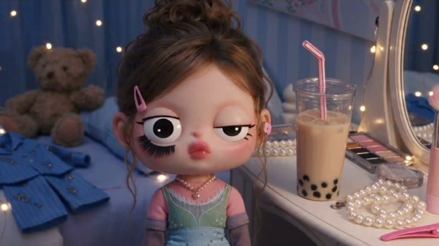
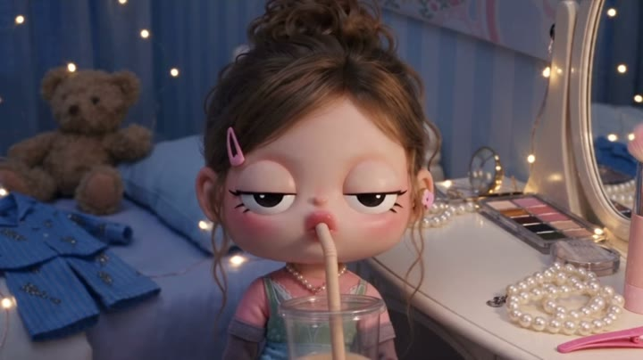
| 샷 크기 | MS 3/4 |
|---|---|
| 앵글 | 아이레벨, 화장대 쪽 3/4 |
| 카메라 무빙 | 고정 (마지막에 미세 푸시) |
| 구도 · 피사체 위치 | 캐릭터 중앙~좌측, 오른쪽 = 버블티·전구 화장대 거울·팔레트·진주. 좌측 = 곰인형·파자마 |
| 연기 · 동작 | 떨어진 속눈썹을 떼어냄 → 들여다봄 → 버블티 컵에 휙 던져 넣음(26.5s) → 컵 들고 빨대로 마심 → 속눈썹이 빨대 속으로 올라옴 |
| 배경 · 조명 | cosy girly bedroom at night: warm fairy-light bokeh, a brown teddy bear on a light-blue bed, a folded blue pinstripe pajama set, a white vanity desk with an iced brown-sugar boba milk tea (pink straw), pearl strands and pink hair clips, a bulb-lit vanity mirror on the right |
| 전환 | 엔딩 (하드 컷 끝 → 루프) |
| 사운드 | '퐁' → '쭈우웁' |
| 자막 · 텍스트 | 없음 |
| 편집 의도 (왜 떡상?) | 예상 밖의 엉뚱한 결말 = 공유/댓글 트리거 |
hyperreal miniature designer-toy photography, cinematic 16:9 frame, shallow depth of field, 85mm macro lens look, soft diffused key light with gentle rim light, creamy bokeh, subtle film grain, Pop Mart / Blythe collectible-doll aesthetic, glossy vinyl-resin skin with soft subsurface scattering, ultra-detailed, 4K. HAMZZI, a chubby anthropomorphic golden-cream Syrian hamster girl designer-toy figure (white muzzle and belly fur, tiny pink nose, small round ears, oversized glossy black doll eyes under big dome eyelids that sit heavy and half-closed in a sassy deadpan look, pink blush cheeks, tiny glossy pink pouty mouth, chibi 1:1.6 head-to-body proportion, little pink paws with tiny fingers, fine soft fur texture over vinyl-toy volume). Outfit: fur tuft neatly tied in a small top bun with a pink hair clip, tiny pink heart ear stud, pink long-sleeve top under a mint knit vest, short pearl necklace. Face state: one lash missing. Scene: medium three-quarter shot at the vanity, HAMZZI peeling the dangling false eyelash off her cheek, iced boba milk tea with pink straw beside her, cosy girly bedroom at night: warm fairy-light bokeh, a brown teddy bear on a light-blue bed, a folded blue pinstripe pajama set, a white vanity desk with an iced brown-sugar boba milk tea (pink straw), pearl strands and pink hair clips, a bulb-lit vanity mirror on the right.
text, watermark, logo, subtitles, extra fingers, fused paws, human face on the character, realistic human skin on the character, deformed eyes, asymmetrical eyes, flat cartoon shading, blurry subject, low resolution
[7.0s, 16:9, 30fps] Camera: static medium shot. Action beats: she peels the lash off, inspects it, flicks it into the boba cup, then picks up the cup and sips through the straw with a deadpan stare while the lash travels up the straw. Audio (native, no music): tiny plop in drink, long straw slurp. Keep the character identical to the reference image (same fur colour, outfit, proportions). Real-world physics, tactile miniature scale, no morphing of the face, no extra limbs. No background music.
2위-5. 사운드 디자인 (BGM · 효과음)
결론: 배경음악 없음. 가장 조용한 ASMR형(-40dB 중앙값, 3편 중 최저). 무음에 가까운 룸톤에 핀셋 '틱', 풀 짜는 '찍', 하품·콧노래, 헤어 휙 '슉', 빨대 '쭈읍'만 도드라지게 배치.
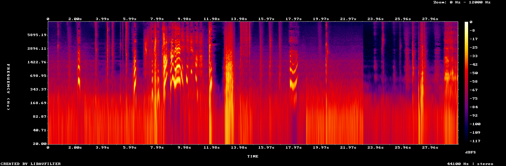
원본 오디오 스펙트로그램(0–12kHz). 세로 밝은 줄 = 효과음 히트, 물결 모양 가로 줄 = 목소리/휘파람. 여러 음이 계속 겹치는 음악 패턴이 없어서 BGM이 없다고 판단했습니다. 대사 자막은 음성 인식 키 오류로 추출하지 못했습니다(화면 자막만 반영).
| 시점 | 세기 | 효과음 (재현용) |
|---|---|---|
| 2.2–2.3 | -16dB | 핀셋 '틱' + 작은 '흡' 숨소리 |
| 6.2–6.4 | -14dB | 속눈썹 떨어지는 '톡' |
| 7.8–9.8 | -8dB | 튜브 풀 '찌익' 짜기 + 꾹 누르기 + 앓는 소리 |
| 10.1–12.0 | -9dB | 하품 '하아암~' + 볼 톡톡 두드림 |
| 13.0–13.5 | -13dB | 헤어 휘핑 '슈욱' (전환 효과음) |
| 17.7–17.8 | -20dB | 도도한 콧노래 '흥~' |
| 22.0 | 약 | 당황 '어?' 미세 숨 |
| 26.5–27.4 | -20dB | 속눈썹 버블티에 '퐁' |
| 28.0–30.0 | -23dB | 빨대 '쭈우웁' 흡입 |
2위-6. 편집 — FFmpeg (컷 길이 원본과 동일)
생성한 클립을 clips/s01.mp4 …로 저장 → Git Bash에서 실행. 컷 길이를 원본과 똑같이 자르고 이어붙인 뒤 전환·마무리·음량 정규화와 9:16 버전까지 만듭니다.
#!/usr/bin/env bash
# A2O May - Shijie · Going Out — remake assembly script (auto-generated from measured cut list)
# Put generated clips in ./clips as s01.mp4, s02.mp4 ... (one file per shot, any length >= target).
# Stills (cover frame / no-video shots) go in ./clips as sNN.png.
set -euo pipefail
W=1920; H=1080; FPS=30
mkdir -p work
norm() { # $1=input $2=exact duration $3=output -> exact-length H.264 + 48k stereo AAC
local in="$1" dur="$2" out="$3" vf="scale=$W:$H:force_original_aspect_ratio=increase,crop=$W:$H,fps=$FPS,setsar=1,format=yuv420p"
if [[ "$in" == *.png ]]; then
ffmpeg -nostdin -y -loop 1 -i "$in" -f lavfi -i anullsrc=r=48000:cl=stereo -t "$dur" -vf "$vf" \
-map 0:v -map 1:a -c:v libx264 -crf 16 -preset slow -c:a aac -b:a 192k "$out"
elif ffprobe -v error -select_streams a -show_entries stream=index -of csv=p=0 "$in" | grep -q .; then
ffmpeg -nostdin -y -i "$in" -t "$dur" -vf "$vf" -af "aresample=48000,apad" \
-map 0:v:0 -map 0:a:0 -c:v libx264 -crf 16 -preset slow -c:a aac -b:a 192k -ac 2 "$out"
else # model returned silent video -> add silent track so concat never breaks
ffmpeg -nostdin -y -i "$in" -f lavfi -i anullsrc=r=48000:cl=stereo -t "$dur" -vf "$vf" \
-map 0:v:0 -map 1:a -c:v libx264 -crf 16 -preset slow -c:a aac -b:a 192k "$out"
fi
}
# 1) 컷 길이를 원본과 프레임 단위로 동일하게 맞춤 (측정값)
norm clips/s01.mp4 2.623 work/n01.mp4 # 0.000-2.623 POV (거울) CU
norm clips/s02.mp4 4.288 work/n02.mp4 # 2.623-6.911 ECU 매크로
norm clips/s03.mp4 1.374 work/n03.mp4 # 6.911-8.285 ECU 매크로
norm clips/s04.mp4 1.332 work/n04.mp4 # 8.285-9.617 ECU 매크로
norm clips/s05.mp4 3.383 work/n05.mp4 # 9.617-13.000 MCU 정면
norm clips/s06.mp4 5.818 work/n06.mp4 # 13.000-18.818 MCU 정면
norm clips/s07.mp4 4.163 work/n07.mp4 # 18.818-22.981 POV (거울) CU
norm clips/s08.mp4 7.036 work/n08.mp4 # 22.981-30.017 MS 3/4
# 2) 하드 컷 이어붙이기 (재인코딩 없음)
cat > work/list.txt <<'EOF'
file 'n01.mp4'
file 'n02.mp4'
file 'n03.mp4'
file 'n04.mp4'
file 'n05.mp4'
file 'n06.mp4'
file 'n07.mp4'
file 'n08.mp4'
EOF
ffmpeg -nostdin -y -f concat -safe 0 -i work/list.txt -c copy work/joined.mp4
# 3) 헤어 휘핑 전환 보정: s05→s06을 따로 만들었다면 13.0s 지점에 0.2초 smoothleft + 모션블러 + '슈욱'
# (한 클립 안에서 머리를 휙 돌리게 뽑았다면 이 단계 생략 = 원본 방식)
# xfade가 0.2초를 겹치므로 결과물은 29.82초가 됨 (원본보다 0.2초 짧음)
ffmpeg -nostdin -y -i work/joined.mp4 -i sfx/whoosh.wav -filter_complex \
"[0:v]split[v0][v1];[v0]trim=0:13.0,setpts=PTS-STARTPTS[a];[v1]trim=start=13.0,setpts=PTS-STARTPTS[b];\
[a][b]xfade=transition=smoothleft:duration=0.2:offset=12.8[v];\
[0:a]asplit[x0][x1];[x0]atrim=0:13.0,asetpts=PTS-STARTPTS[xa];[x1]atrim=start=13.0,asetpts=PTS-STARTPTS[xb];\
[xa][xb]acrossfade=d=0.2[ac];[1:a]adelay=12800|12800,volume=0.8[w];[ac][w]amix=inputs=2:duration=first:normalize=0[au]" \
-map "[v]" -map "[au]" -c:v libx264 -crf 17 -preset slow -c:a aac -b:a 192k -shortest work/whip.mp4
# 마무리: 음량 정규화 (원본은 매우 조용한 ASMR형 → -16 LUFS로 살짝 낮게)
ffmpeg -nostdin -y -i work/whip.mp4 -af "loudnorm=I=-16:TP=-1.5:LRA=11" -c:v copy -c:a aac -b:a 192k -shortest -movflags +faststart final_16x9.mp4
# 4) (선택) 9:16 릴스 세로 버전 — 블러 배경 + 가운데 16:9 원본
ffmpeg -nostdin -y -i final_16x9.mp4 -filter_complex "[0:v]split[a][b];[a]scale=1080:1920:force_original_aspect_ratio=increase,crop=1080:1920,boxblur=40:4,eq=brightness=-0.06[bg];[b]scale=1080:-2[fg];[bg][fg]overlay=(W-w)/2:(H-h)/2" -c:v libx264 -crf 17 -preset slow -c:a copy final_9x16.mp4
2위-7. 편집 — HyperFrames (자막 · 전환 · 엔드카드 포함 1파일)
/hyperframes 스킬을 먼저 읽고 진행해줘. 목표: picassong 2위 릴스(Dc051CjSK60) 구조를 햄찌 캐릭터로 똑같이 재현한 16:9 1920x1080 30fps 영상 1편. - 입력: ./clips/sNN.mp4 (내가 생성한 샷 클립), 컷 타임라인(원본 실측): s01 0.000-2.623s; s02 2.623-6.911s; s03 6.911-8.285s; s04 8.285-9.617s; s05 9.617-13.000s; s06 13.000-18.818s; s07 18.818-22.981s; s08 22.981-30.017s - 모든 컷은 하드 컷, 각 클립은 data-media-start=0부터 위 길이만큼만 사용. 클립 오디오는 별도 <audio id>로 넣고 video는 muted. - 첨부한 index.html 초안을 기준으로 하고, 타이밍 숫자는 절대 바꾸지 마. - 완료 조건: npx hyperframes check 0 findings → 중간 지점 snapshot으로 눈 확인 → 내가 승인하면 render. - 🔴 승인 전 render/업로드 금지. clips 폴더 밖 파일 수정 금지.
<!doctype html>
<html lang="ko">
<head>
<meta charset="UTF-8" />
<meta name="viewport" content="width=1920, height=1080" />
<title>Dc051CjSK60 remake</title>
<script src="https://cdn.jsdelivr.net/npm/gsap@3.14.2/dist/gsap.min.js"></script>
<style>
body { margin: 0; background: #000; }
#root { position: relative; width: 100%; height: 100%; overflow: hidden; background: #000; }
.shot { position: absolute; inset: 0; width: 100%; height: 100%; object-fit: cover; }
#whip { position: absolute; inset: 0; pointer-events: none; }
#whip-streak { position: absolute; inset: 0; background: linear-gradient(90deg, transparent, rgba(90,60,40,.85) 45%, rgba(90,60,40,.85) 55%, transparent); filter: blur(24px); }
</style>
</head>
<body>
<div id="root" data-composition-id="main" data-start="0" data-width="1920" data-height="1080" data-duration="30.017">
<video id="s01" class="clip shot" src="clips/s01.mp4" data-start="0.000" data-duration="2.623" data-media-start="0" data-track-index="0" muted playsinline></video>
<video id="s02" class="clip shot" src="clips/s02.mp4" data-start="2.623" data-duration="4.288" data-media-start="0" data-track-index="0" muted playsinline></video>
<video id="s03" class="clip shot" src="clips/s03.mp4" data-start="6.911" data-duration="1.374" data-media-start="0" data-track-index="0" muted playsinline></video>
<video id="s04" class="clip shot" src="clips/s04.mp4" data-start="8.285" data-duration="1.332" data-media-start="0" data-track-index="0" muted playsinline></video>
<video id="s05" class="clip shot" src="clips/s05.mp4" data-start="9.617" data-duration="3.383" data-media-start="0" data-track-index="0" muted playsinline></video>
<video id="s06" class="clip shot" src="clips/s06.mp4" data-start="13.000" data-duration="5.818" data-media-start="0" data-track-index="0" muted playsinline></video>
<video id="s07" class="clip shot" src="clips/s07.mp4" data-start="18.818" data-duration="4.163" data-media-start="0" data-track-index="0" muted playsinline></video>
<video id="s08" class="clip shot" src="clips/s08.mp4" data-start="22.981" data-duration="7.036" data-media-start="0" data-track-index="0" muted playsinline></video>
<audio id="a01" src="clips/s01.mp4" data-start="0.000" data-duration="2.623" data-media-start="0" data-track-index="10" data-volume="1"></audio>
<audio id="a02" src="clips/s02.mp4" data-start="2.623" data-duration="4.288" data-media-start="0" data-track-index="10" data-volume="1"></audio>
<audio id="a03" src="clips/s03.mp4" data-start="6.911" data-duration="1.374" data-media-start="0" data-track-index="10" data-volume="1"></audio>
<audio id="a04" src="clips/s04.mp4" data-start="8.285" data-duration="1.332" data-media-start="0" data-track-index="10" data-volume="1"></audio>
<audio id="a05" src="clips/s05.mp4" data-start="9.617" data-duration="3.383" data-media-start="0" data-track-index="10" data-volume="1"></audio>
<audio id="a06" src="clips/s06.mp4" data-start="13.000" data-duration="5.818" data-media-start="0" data-track-index="10" data-volume="1"></audio>
<audio id="a07" src="clips/s07.mp4" data-start="18.818" data-duration="4.163" data-media-start="0" data-track-index="10" data-volume="1"></audio>
<audio id="a08" src="clips/s08.mp4" data-start="22.981" data-duration="7.036" data-media-start="0" data-track-index="10" data-volume="1"></audio>
<div id="whip" class="clip" data-start="12.8" data-duration="0.4" data-track-index="2">
<div id="whip-streak"></div>
</div>
<audio id="sfx-whoosh" src="sfx/whoosh.wav" data-start="12.9" data-duration="0.6" data-track-index="11" data-volume="0.8"></audio>
</div>
<script>
const tl = gsap.timeline({ paused: true });
// 헤어 휘핑 보조: 갈색 모션 스트릭이 0.4초 동안 좌→우로 화면을 쓸고 지나감
tl.fromTo("#whip-streak", { xPercent: -110 }, { xPercent: 110, duration: 0.4, ease: "power2.inOut" }, 12.8);
window.__timelines["main"] = tl;
</script>
</body>
</html>
🖌️ It's so hard to wait for my nail polish to dry ㅜㅜ
한 줄 스토리
셀프로 검정 글리터 네일 칠하기 → 마르길 기다리며 손 흔들다 냉장고 문 열다 망가짐 → 선반 컵 잡다 또 망가짐 → 다시 칠하다 포기, 폰으로 예약 → 풀착장 등장 → 네일숍 → 네온 옐로 커스텀 네일아트 → '역시 프로가 최고야!'3위-1. 컷 타임라인 (실측 · 클릭하면 해당 샷으로)
컷 시점은 ffmpeg 장면 변화 감지(scene>0.25)로 측정 후, 애매한 구간은 0.1초 단위 프레임으로 직접 확인. 색 블록 폭 = 실제 길이 비율.
| 구간 | 역할 | 내용 |
|---|---|---|
| 0.0–0.17 | COVER 플래시 | 썸네일용 와이드 5프레임 (릴스 커버 프레임) |
| 0.17–3.7 | SETUP 셀프 네일 | 혀 내밀고 집중해서 칠함 → 후~ 불기 |
| 3.7–15.3 | FAIL x2 에스컬레이션 | 손 흔들며 말리기 → 냉장고 손잡이 → 찌그러짐 → 선반 컵 → 벗겨짐 |
| 15.3–19.5 | GIVE UP | 다시 칠함 → 열 손가락 확인 → 한숨 → 폰 들기(예약) |
| 19.5–22.3 | TRANSFORMATION | 문 열고 풀착장 등장 → 네일숍 착석 |
| 22.3–26.7 | SATISFYING 인서트 | 네일아트 매크로 타임랩스 점프컷 |
| 26.7–30.4 | PAYOFF + 대사 | 헤어 휙 → 열 손가락 자랑 → 자막 '역시 프로가 최고야!' → 페이드아웃 |
| 30.4–33.2 | END CARD | 스폰서(Higgsfield) 엔드카드 → 내 채널 엔드카드로 교체 |
3위-2. 떡상 편집 포인트
- 첫 0.17초 와이드 컷 = 릴스 커버/썸네일을 영상 안에 심는 기법
- 첫 3초 ECU '혀 내밀고 집중' = 누구나 해본 셀프네일 공감
- 실패를 2번(냉장고→선반) 반복 에스컬레이션 → 3번째에 포기 (3의 법칙)
- 손톱 ECU 인서트에 뒤 배경으로 캐릭터 눈이 커짐 = 한 컷에 '원인+리액션' 동시
- 문 열고 등장 = 가장 싼 변신 전환(컷 하나로 의상 체인지)
- 네일아트 매크로 타임랩스 = 'satisfying' 알고리즘 구간
- 대사는 마지막 1줄만, 영어+한글 이중 자막 → 글로벌+국내 동시 공략
- 스폰서 엔드카드 → 브랜드 협업 수익 구조 (내 버전은 채널 CTA로 교체)
3위-3. 캐릭터 변환 기준 (원본 인형 → 햄찌)
모든 프롬프트는 아래 3개 블록 + 샷별 장면으로 조립돼 있습니다. 다른 동물로 바꿀 때는 CHARACTER 블록만 교체하면 전 샷이 한 번에 바뀝니다. (예: “golden-cream Syrian hamster” → “white Maltese puppy”)
hyperreal miniature designer-toy photography, cinematic 16:9 frame, shallow depth of field, 85mm macro lens look, soft diffused key light with gentle rim light, creamy bokeh, subtle film grain, Pop Mart / Blythe collectible-doll aesthetic, glossy vinyl-resin skin with soft subsurface scattering, ultra-detailed, 4K
HAMZZI, a chubby anthropomorphic golden-cream Syrian hamster girl designer-toy figure (white muzzle and belly fur, tiny pink nose, small round ears, oversized glossy black doll eyes under big dome eyelids that sit heavy and half-closed in a sassy deadpan look, pink blush cheeks, tiny glossy pink pouty mouth, chibi 1:1.6 head-to-body proportion, little pink paws with tiny fingers, fine soft fur texture over vinyl-toy volume)
neon-lime dyed fluffy fur fringe hanging over the face like messy bangs, dark-green pinstripe satin pajama set with small rhinestone embroidery, dark-green pinstripe sleep mask with a jewelled brooch pushed up on the head, long black glitter stiletto nails on every finger
3위-4. 샷별 정밀 분석 + 프롬프트
샷 크기 용어 정리
| ECU | 익스트림 클로즈업 | 눈·손톱 하나만 꽉 차게 (감정/디테일 극대화) |
| CU | 클로즈업 | 얼굴 전체 (표정 리액션) |
| MCU | 미디엄 클로즈업 | 가슴 위 (대사/표정 + 약간의 손동작) |
| MS | 미디엄 샷 | 허리 위 (행동이 보이는 기본 샷) |
| WS | 와이드 샷 | 전신+공간 (상황 설명/이동) |
| OTS | 오버 더 숄더 | 상대 어깨 너머로 찍기 (대면 긴장감) |
| INSERT | 인서트 | 손·소품만 따로 (촉각·ASMR 만족감) |
| POV | 시점 샷 | 캐릭터/거울 시점 (몰입) |
WS (커버)
0.000s → 0.167s · 0.17초| 샷 크기 | WS (커버) |
|---|---|
| 앵글 | 정면 로우 |
| 카메라 무빙 | 고정 |
| 구도 · 피사체 위치 | 바닥에 앉아 손톱 칠하는 전신. 과자봉지·매니큐어병 전경 |
| 연기 · 동작 | 커버 프레임 5프레임 (0.17초) |
| 배경 · 조명 | messy teen bedroom at night lit by a green neon LED strip along the ceiling, warm fairy lights, a white vanity with a wavy Hollywood bulb mirror and a small lamp, green gingham bed with bunny plushies and a green heart pillow, a mint mini-fridge, floor littered with a chips bag, tissues, jeans and a black nail-polish bottle |
| 전환 | 하드 컷 |
| 사운드 | - |
| 자막 · 텍스트 | 없음 |
| 편집 의도 (왜 떡상?) | 릴스 첫 프레임 = 피드 썸네일 |
hyperreal miniature designer-toy photography, cinematic 16:9 frame, shallow depth of field, 85mm macro lens look, soft diffused key light with gentle rim light, creamy bokeh, subtle film grain, Pop Mart / Blythe collectible-doll aesthetic, glossy vinyl-resin skin with soft subsurface scattering, ultra-detailed, 4K. HAMZZI, a chubby anthropomorphic golden-cream Syrian hamster girl designer-toy figure (white muzzle and belly fur, tiny pink nose, small round ears, oversized glossy black doll eyes under big dome eyelids that sit heavy and half-closed in a sassy deadpan look, pink blush cheeks, tiny glossy pink pouty mouth, chibi 1:1.6 head-to-body proportion, little pink paws with tiny fingers, fine soft fur texture over vinyl-toy volume). Outfit: neon-lime dyed fluffy fur fringe hanging over the face like messy bangs, dark-green pinstripe satin pajama set with small rhinestone embroidery, dark-green pinstripe sleep mask with a jewelled brooch pushed up on the head, long black glitter stiletto nails on every finger. Face state: focused, tongue slightly out. Scene: frontal low wide shot, HAMZZI sitting cross-legged on a fluffy rug painting her nails, chips bag and black polish bottle in the foreground, messy teen bedroom at night lit by a green neon LED strip along the ceiling, warm fairy lights, a white vanity with a wavy Hollywood bulb mirror and a small lamp, green gingham bed with bunny plushies and a green heart pillow, a mint mini-fridge, floor littered with a chips bag, tissues, jeans and a black nail-polish bottle.
text, watermark, logo, subtitles, extra fingers, fused paws, human face on the character, realistic human skin on the character, deformed eyes, asymmetrical eyes, flat cartoon shading, blurry subject, low resolution
ECU (얼굴+손)
0.167s → 3.700s · 3.53초| 샷 크기 | ECU (얼굴+손) |
|---|---|
| 앵글 | 정면, 살짝 하이 |
| 카메라 무빙 | 고정 |
| 구도 · 피사체 위치 | 얼굴 상반부가 화면 가득(눈 라인 상단 1/3), 하단 1/3에 손과 긴 스틸레토 손톱. 붓은 왼쪽 위에서 대각선 |
| 연기 · 동작 | 혀를 살짝 내밀고 집중해 검정 글리터를 칠함 → 입 모아 '후~' 불기(2.5–3.5s) |
| 배경 · 조명 | 녹색 네온 보케 |
| 전환 | 하드 컷 |
| 사운드 | 붓질 '스윽', 입김 '후~' |
| 자막 · 텍스트 | 없음 |
| 편집 의도 (왜 떡상?) | 첫 3초 공감 훅 (혀 내밀고 집중 = 밈 표정) |
hyperreal miniature designer-toy photography, cinematic 16:9 frame, shallow depth of field, 85mm macro lens look, soft diffused key light with gentle rim light, creamy bokeh, subtle film grain, Pop Mart / Blythe collectible-doll aesthetic, glossy vinyl-resin skin with soft subsurface scattering, ultra-detailed, 4K. HAMZZI, a chubby anthropomorphic golden-cream Syrian hamster girl designer-toy figure (white muzzle and belly fur, tiny pink nose, small round ears, oversized glossy black doll eyes under big dome eyelids that sit heavy and half-closed in a sassy deadpan look, pink blush cheeks, tiny glossy pink pouty mouth, chibi 1:1.6 head-to-body proportion, little pink paws with tiny fingers, fine soft fur texture over vinyl-toy volume). Outfit: neon-lime dyed fluffy fur fringe hanging over the face like messy bangs, dark-green pinstripe satin pajama set with small rhinestone embroidery, dark-green pinstripe sleep mask with a jewelled brooch pushed up on the head, long black glitter stiletto nails on every finger. Face state: focused downward gaze, tongue out. Scene: extreme close-up of HAMZZI's face filling the upper frame with tongue poking out in concentration, painting a long stiletto fingernail with a thin brush of black glitter polish, lower third shows the paw and nail, green neon glow.
text, watermark, logo, subtitles, extra fingers, fused paws, human face on the character, realistic human skin on the character, deformed eyes, asymmetrical eyes, flat cartoon shading, blurry subject, low resolution
[3.5s, 16:9, 30fps] Camera: static close-up. Action beats: she paints the nail in two careful strokes with her tongue out, then purses her lips and blows on the nail. Audio (native, no music): brush strokes, a soft blowing 'fuu'. Keep the character identical to the reference image (same fur colour, outfit, proportions). Real-world physics, tactile miniature scale, no morphing of the face, no extra limbs. No background music.
WS → MS (연속 이동)
3.700s → 9.867s · 6.17초| 샷 크기 | WS → MS (연속 이동) |
|---|---|
| 앵글 | 바닥 로우앵글 |
| 카메라 무빙 | 앞으로 트래킹 + 우측 팬 (캐릭터가 냉장고로 걸어가며 카메라가 따라 붙음) |
| 구도 · 피사체 위치 | 시작: 바닥 중앙에 앉아 있는 전신(침대·화장대 배경) → 일어나 손 흔들며 걷기 → 끝: 오른쪽 1/3 민트 냉장고, 캐릭터 왼쪽 MS |
| 연기 · 동작 | 손톱에 입김 → 일어나 손가락 쫙 펴고 파닥파닥 흔들며 어정쩡하게 걷기 → 냉장고 손잡이를 손가락 끝으로 조심스럽게 당김 → 눈 질끈 → (9.5s) 눈 번쩍 '헉' |
| 배경 · 조명 | messy teen bedroom at night lit by a green neon LED strip along the ceiling, warm fairy lights, a white vanity with a wavy Hollywood bulb mirror and a small lamp, green gingham bed with bunny plushies and a green heart pillow, a mint mini-fridge, floor littered with a chips bag, tissues, jeans and a black nail-polish bottle |
| 전환 | 하드 컷 (리액션 → 인서트) |
| 사운드 | 손 털기, 발소리, '딸깍', '헉!' |
| 자막 · 텍스트 | 없음 |
| 편집 의도 (왜 떡상?) | 한 번의 긴 무빙 샷 = 공간 소개 + 행동 코미디(손 못 쓰는 사람 걸음) |
hyperreal miniature designer-toy photography, cinematic 16:9 frame, shallow depth of field, 85mm macro lens look, soft diffused key light with gentle rim light, creamy bokeh, subtle film grain, Pop Mart / Blythe collectible-doll aesthetic, glossy vinyl-resin skin with soft subsurface scattering, ultra-detailed, 4K. HAMZZI, a chubby anthropomorphic golden-cream Syrian hamster girl designer-toy figure (white muzzle and belly fur, tiny pink nose, small round ears, oversized glossy black doll eyes under big dome eyelids that sit heavy and half-closed in a sassy deadpan look, pink blush cheeks, tiny glossy pink pouty mouth, chibi 1:1.6 head-to-body proportion, little pink paws with tiny fingers, fine soft fur texture over vinyl-toy volume). Outfit: neon-lime dyed fluffy fur fringe hanging over the face like messy bangs, dark-green pinstripe satin pajama set with small rhinestone embroidery, dark-green pinstripe sleep mask with a jewelled brooch pushed up on the head, long black glitter stiletto nails on every finger. Face state: sleepy half-lidded. Scene: low-angle wide shot, HAMZZI standing in the middle of the messy bedroom waving her stiff spread fingers in the air to dry her nails, messy teen bedroom at night lit by a green neon LED strip along the ceiling, warm fairy lights, a white vanity with a wavy Hollywood bulb mirror and a small lamp, green gingham bed with bunny plushies and a green heart pillow, a mint mini-fridge, floor littered with a chips bag, tissues, jeans and a black nail-polish bottle.
text, watermark, logo, subtitles, extra fingers, fused paws, human face on the character, realistic human skin on the character, deformed eyes, asymmetrical eyes, flat cartoon shading, blurry subject, low resolution
[6.2s, 16:9, 30fps] Camera: low angle, camera tracks forward and pans right to follow her to the mini-fridge. Action beats: she blows on her nails, stands up waving her spread fingers stiffly, waddles to the mint fridge, carefully hooks the handle with a fingertip, winces, then her eyes pop wide open in shock. Audio (native, no music): hand flapping, soft footsteps, fridge click, a gasp. Keep the character identical to the reference image (same fur colour, outfit, proportions). Real-world physics, tactile miniature scale, no morphing of the face, no extra limbs. No background music.
ECU 인서트 (포커스 전경)
9.867s → 11.733s · 1.87초| 샷 크기 | ECU 인서트 (포커스 전경) |
|---|---|
| 앵글 | 정면 |
| 카메라 무빙 | 고정 + 초점이 손톱→눈으로 살짝 이동 |
| 구도 · 피사체 위치 | 검정 글리터 손톱이 화면 중앙 가로로 크게(선명), 뒤 배경에 캐릭터 눈 두 개(흐림) |
| 연기 · 동작 | 손톱 표면이 찍혀서 자국이 남음 → 뒤의 눈이 반쯤 → 동그랗게 커짐 |
| 배경 · 조명 | 캐릭터 얼굴 자체가 배경 |
| 전환 | 하드 컷 |
| 사운드 | '뚱' 강조음 |
| 자막 · 텍스트 | 없음 |
| 편집 의도 (왜 떡상?) | 원인(망가진 손톱)+리액션(커지는 눈)을 한 프레임에 = 정보 압축 |
hyperreal miniature designer-toy photography, cinematic 16:9 frame, shallow depth of field, 85mm macro lens look, soft diffused key light with gentle rim light, creamy bokeh, subtle film grain, Pop Mart / Blythe collectible-doll aesthetic, glossy vinyl-resin skin with soft subsurface scattering, ultra-detailed, 4K. HAMZZI, a chubby anthropomorphic golden-cream Syrian hamster girl designer-toy figure (white muzzle and belly fur, tiny pink nose, small round ears, oversized glossy black doll eyes under big dome eyelids that sit heavy and half-closed in a sassy deadpan look, pink blush cheeks, tiny glossy pink pouty mouth, chibi 1:1.6 head-to-body proportion, little pink paws with tiny fingers, fine soft fur texture over vinyl-toy volume). Outfit: neon-lime dyed fluffy fur fringe hanging over the face like messy bangs, dark-green pinstripe satin pajama set with small rhinestone embroidery, dark-green pinstripe sleep mask with a jewelled brooch pushed up on the head, long black glitter stiletto nails on every finger. Face state: eyes half-lidded. Scene: extreme close-up of a long black glitter stiletto fingernail held horizontally across the frame in sharp focus with a fresh smudge dent in the wet polish, HAMZZI's two big eyes blurred right behind it.
text, watermark, logo, subtitles, extra fingers, fused paws, human face on the character, realistic human skin on the character, deformed eyes, asymmetrical eyes, flat cartoon shading, blurry subject, low resolution
[1.9s, 16:9, 30fps] Camera: static macro, subtle rack focus. Action beats: the nail holds still; behind it her blurred eyes widen from half-lidded to huge round. Audio (native, no music): a comedic dull 'bonk' accent. Keep the character identical to the reference image (same fur colour, outfit, proportions). Real-world physics, tactile miniature scale, no morphing of the face, no extra limbs. No background music.
MCU 로우
11.733s → 13.033s · 1.30초| 샷 크기 | MCU 로우 |
|---|---|
| 앵글 | 로우앵글 |
| 카메라 무빙 | 고정 |
| 구도 · 피사체 위치 | 캐릭터 좌측, 오른팔을 위로 뻗어 선반 위 흰 머그컵을 손끝으로 잡음 (우상단) |
| 연기 · 동작 | 선반 컵을 손가락 끝으로 조심스럽게 잡다가 이를 악물고 '으~' 찡그림 |
| 배경 · 조명 | 민트 벽, 흰 선반 |
| 전환 | 하드 컷 |
| 사운드 | 컵 '달그락', '으으' |
| 자막 · 텍스트 | 없음 |
| 편집 의도 (왜 떡상?) | 실패 2회차 (에스컬레이션) |
hyperreal miniature designer-toy photography, cinematic 16:9 frame, shallow depth of field, 85mm macro lens look, soft diffused key light with gentle rim light, creamy bokeh, subtle film grain, Pop Mart / Blythe collectible-doll aesthetic, glossy vinyl-resin skin with soft subsurface scattering, ultra-detailed, 4K. HAMZZI, a chubby anthropomorphic golden-cream Syrian hamster girl designer-toy figure (white muzzle and belly fur, tiny pink nose, small round ears, oversized glossy black doll eyes under big dome eyelids that sit heavy and half-closed in a sassy deadpan look, pink blush cheeks, tiny glossy pink pouty mouth, chibi 1:1.6 head-to-body proportion, little pink paws with tiny fingers, fine soft fur texture over vinyl-toy volume). Outfit: neon-lime dyed fluffy fur fringe hanging over the face like messy bangs, dark-green pinstripe satin pajama set with small rhinestone embroidery, dark-green pinstripe sleep mask with a jewelled brooch pushed up on the head, long black glitter stiletto nails on every finger. Face state: wide worried eyes. Scene: low-angle medium close-up, HAMZZI reaching up to a white shelf, gingerly pinching a white mug with her fingertips, mint wall.
text, watermark, logo, subtitles, extra fingers, fused paws, human face on the character, realistic human skin on the character, deformed eyes, asymmetrical eyes, flat cartoon shading, blurry subject, low resolution
[1.3s, 16:9, 30fps] Camera: static low angle. Action beats: she pinches the mug handle with her fingertips, freezes and grimaces through gritted teeth. Audio (native, no music): ceramic clink, strained 'eeee'. Keep the character identical to the reference image (same fur colour, outfit, proportions). Real-world physics, tactile miniature scale, no morphing of the face, no extra limbs. No background music.
ECU 인서트
13.033s → 15.333s · 2.30초| 샷 크기 | ECU 인서트 |
|---|---|
| 앵글 | 정면 |
| 카메라 무빙 | 고정 |
| 구도 · 피사체 위치 | 손가락 하나가 화면 중앙 세로로, 손톱 끝의 폴리시가 벗겨져 말려 올라감. 뒤에 눈 두 개 |
| 연기 · 동작 | 손톱 폴리시가 통째로 벗겨져 들림 → 뒤 눈이 휘둥그레 → 반쯤 감긴 체념(14.5s) |
| 배경 · 조명 | 캐릭터 얼굴 |
| 전환 | 하드 컷 |
| 사운드 | '아…' 한숨 섞인 소리 |
| 자막 · 텍스트 | 없음 |
| 편집 의도 (왜 떡상?) | 실패 결과 확정 + 표정 변화로 웃음 |
hyperreal miniature designer-toy photography, cinematic 16:9 frame, shallow depth of field, 85mm macro lens look, soft diffused key light with gentle rim light, creamy bokeh, subtle film grain, Pop Mart / Blythe collectible-doll aesthetic, glossy vinyl-resin skin with soft subsurface scattering, ultra-detailed, 4K. HAMZZI, a chubby anthropomorphic golden-cream Syrian hamster girl designer-toy figure (white muzzle and belly fur, tiny pink nose, small round ears, oversized glossy black doll eyes under big dome eyelids that sit heavy and half-closed in a sassy deadpan look, pink blush cheeks, tiny glossy pink pouty mouth, chibi 1:1.6 head-to-body proportion, little pink paws with tiny fingers, fine soft fur texture over vinyl-toy volume). Outfit: neon-lime dyed fluffy fur fringe hanging over the face like messy bangs, dark-green pinstripe satin pajama set with small rhinestone embroidery, dark-green pinstripe sleep mask with a jewelled brooch pushed up on the head, long black glitter stiletto nails on every finger. Face state: eyes wide round. Scene: extreme close-up of one upright finger in the centre, the black glitter polish peeled and curled off the nail tip revealing the bare nail, HAMZZI's huge eyes behind it.
text, watermark, logo, subtitles, extra fingers, fused paws, human face on the character, realistic human skin on the character, deformed eyes, asymmetrical eyes, flat cartoon shading, blurry subject, low resolution
[2.3s, 16:9, 30fps] Camera: static macro. Action beats: the peeled polish flap wobbles; her eyes behind go from wide shock to flat, defeated half-lids. Audio (native, no music): tiny deflated sigh. Keep the character identical to the reference image (same fur colour, outfit, proportions). Real-world physics, tactile miniature scale, no morphing of the face, no extra limbs. No background music.
WS 정면
15.333s → 16.233s · 0.90초| 샷 크기 | WS 정면 |
|---|---|
| 앵글 | 바닥 로우 |
| 카메라 무빙 | 고정 |
| 구도 · 피사체 위치 | 침대 앞 바닥 중앙에 양반다리, 주변에 휴지·과자·매니큐어 |
| 연기 · 동작 | 다시 칠하기 시작 (0.9초) |
| 배경 · 조명 | 침대 아래 녹색 LED 라인 |
| 전환 | 하드 컷 |
| 사운드 | 붓질 |
| 자막 · 텍스트 | 없음 |
| 편집 의도 (왜 떡상?) | 짧은 설정 컷으로 '재도전' 전달 |
hyperreal miniature designer-toy photography, cinematic 16:9 frame, shallow depth of field, 85mm macro lens look, soft diffused key light with gentle rim light, creamy bokeh, subtle film grain, Pop Mart / Blythe collectible-doll aesthetic, glossy vinyl-resin skin with soft subsurface scattering, ultra-detailed, 4K. HAMZZI, a chubby anthropomorphic golden-cream Syrian hamster girl designer-toy figure (white muzzle and belly fur, tiny pink nose, small round ears, oversized glossy black doll eyes under big dome eyelids that sit heavy and half-closed in a sassy deadpan look, pink blush cheeks, tiny glossy pink pouty mouth, chibi 1:1.6 head-to-body proportion, little pink paws with tiny fingers, fine soft fur texture over vinyl-toy volume). Outfit: neon-lime dyed fluffy fur fringe hanging over the face like messy bangs, dark-green pinstripe satin pajama set with small rhinestone embroidery, dark-green pinstripe sleep mask with a jewelled brooch pushed up on the head, long black glitter stiletto nails on every finger. Face state: tired half-lidded. Scene: frontal low wide shot, HAMZZI sitting cross-legged on the rug in front of the bed repainting her nails, tissues and chips around her, green LED strip under the bed.
text, watermark, logo, subtitles, extra fingers, fused paws, human face on the character, realistic human skin on the character, deformed eyes, asymmetrical eyes, flat cartoon shading, blurry subject, low resolution
[0.9s, 16:9, 30fps] Camera: static wide. Action beats: she carefully repaints a nail. Audio (native, no music): brush strokes. Keep the character identical to the reference image (same fur colour, outfit, proportions). Real-world physics, tactile miniature scale, no morphing of the face, no extra limbs. No background music.
MCU 정면
16.233s → 19.467s · 3.23초| 샷 크기 | MCU 정면 |
|---|---|
| 앵글 | 정면 아이레벨 |
| 카메라 무빙 | 고정 |
| 구도 · 피사체 위치 | 얼굴 상단 1/3~중앙, 하단에 열 손가락 스틸레토 손톱이 부채처럼 |
| 연기 · 동작 | 칠함 → 열 손가락을 쫙 펴서 들여다봄 → 눈 감고 한숨 → (18.9s) 스마트폰을 들어 화면 봄 (예약하는 뉘앙스) |
| 배경 · 조명 | 녹색 네온 하단 라인 |
| 전환 | 하드 컷 (폰 → 문 열고 등장 = 동기 부여 컷) |
| 사운드 | 한숨 '하아…' |
| 자막 · 텍스트 | 없음 |
| 편집 의도 (왜 떡상?) | '결심' 순간을 폰 하나로 설명 |
hyperreal miniature designer-toy photography, cinematic 16:9 frame, shallow depth of field, 85mm macro lens look, soft diffused key light with gentle rim light, creamy bokeh, subtle film grain, Pop Mart / Blythe collectible-doll aesthetic, glossy vinyl-resin skin with soft subsurface scattering, ultra-detailed, 4K. HAMZZI, a chubby anthropomorphic golden-cream Syrian hamster girl designer-toy figure (white muzzle and belly fur, tiny pink nose, small round ears, oversized glossy black doll eyes under big dome eyelids that sit heavy and half-closed in a sassy deadpan look, pink blush cheeks, tiny glossy pink pouty mouth, chibi 1:1.6 head-to-body proportion, little pink paws with tiny fingers, fine soft fur texture over vinyl-toy volume). Outfit: neon-lime dyed fluffy fur fringe hanging over the face like messy bangs, dark-green pinstripe satin pajama set with small rhinestone embroidery, dark-green pinstripe sleep mask with a jewelled brooch pushed up on the head, long black glitter stiletto nails on every finger. Face state: tired half-lidded. Scene: frontal medium close-up, HAMZZI holding up both paws with ten long black glitter stiletto nails spread like fans, green neon line along the bottom.
text, watermark, logo, subtitles, extra fingers, fused paws, human face on the character, realistic human skin on the character, deformed eyes, asymmetrical eyes, flat cartoon shading, blurry subject, low resolution
[3.2s, 16:9, 30fps] Camera: static. Action beats: she spreads all ten nails, stares, sighs with eyes closed, then lifts a black smartphone and looks at it deadpan. Audio (native, no music): a long sigh. Keep the character identical to the reference image (same fur colour, outfit, proportions). Real-world physics, tactile miniature scale, no morphing of the face, no extra limbs. No background music.
WS 정면
19.467s → 20.900s · 1.43초| 샷 크기 | WS 정면 |
|---|---|
| 앵글 | 아이레벨 |
| 카메라 무빙 | 고정 |
| 구도 · 피사체 위치 | 왼쪽 1/3 흰 문, 캐릭터가 문 뒤에서 걸어 나와 중앙에 섬. 오른쪽 흰 수납장 |
| 연기 · 동작 | 문을 열고 풀착장으로 걸어 들어옴 (의상 체인지) |
| 배경 · 조명 | 민트 벽 복도, 램프 |
| 전환 | 하드 컷 |
| 사운드 | 문 '끼익', 플랫폼 발소리 |
| 자막 · 텍스트 | 없음 |
| 편집 의도 (왜 떡상?) | 문 = 가장 싼 변신 전환 |
hyperreal miniature designer-toy photography, cinematic 16:9 frame, shallow depth of field, 85mm macro lens look, soft diffused key light with gentle rim light, creamy bokeh, subtle film grain, Pop Mart / Blythe collectible-doll aesthetic, glossy vinyl-resin skin with soft subsurface scattering, ultra-detailed, 4K. HAMZZI, a chubby anthropomorphic golden-cream Syrian hamster girl designer-toy figure (white muzzle and belly fur, tiny pink nose, small round ears, oversized glossy black doll eyes under big dome eyelids that sit heavy and half-closed in a sassy deadpan look, pink blush cheeks, tiny glossy pink pouty mouth, chibi 1:1.6 head-to-body proportion, little pink paws with tiny fingers, fine soft fur texture over vinyl-toy volume). Outfit: neon-lime high ponytail with black streaks and straight blunt bangs, sheer pastel-blue ruffled blouse, layered frilly cream-and-mint mini skirt, fluffy mint leg warmers, chunky pastel platform sneakers, stacks of colourful beaded bracelets and necklaces. Face state: confident half-lidded. Scene: frontal wide shot of a mint-walled room, a white door on the left half open, HAMZZI stepping through it in the going-out outfit, standing centred, white cabinet on the right.
text, watermark, logo, subtitles, extra fingers, fused paws, human face on the character, realistic human skin on the character, deformed eyes, asymmetrical eyes, flat cartoon shading, blurry subject, low resolution
[1.4s, 16:9, 30fps] Camera: static wide. Action beats: the door swings open and she struts in, stops in the centre and poses. Audio (native, no music): door creak, chunky footsteps. Keep the character identical to the reference image (same fur colour, outfit, proportions). Real-world physics, tactile miniature scale, no morphing of the face, no extra limbs. No background music.
MS
20.900s → 22.333s · 1.43초| 샷 크기 | MS |
|---|---|
| 앵글 | 살짝 하이앵글 3/4 |
| 카메라 무빙 | 고정 |
| 구도 · 피사체 위치 | 왼쪽 = 캐릭터(의자), 중앙 하단 = 손 받침 쿠션 위 손, 오른쪽 = 네일리스트 손(사람). 우상단 램프 |
| 연기 · 동작 | 네일숍에 앉아 손 맡기고 곁눈질로 만족 |
| 배경 · 조명 | bright white nail salon, arched mirrors, pastel nail-polish shelves, other customers softly blurred |
| 전환 | 하드 컷 |
| 사운드 | 숍 앰비언스 |
| 자막 · 텍스트 | 없음 |
| 편집 의도 (왜 떡상?) | 장소 전환 설명 컷 |
hyperreal miniature designer-toy photography, cinematic 16:9 frame, shallow depth of field, 85mm macro lens look, soft diffused key light with gentle rim light, creamy bokeh, subtle film grain, Pop Mart / Blythe collectible-doll aesthetic, glossy vinyl-resin skin with soft subsurface scattering, ultra-detailed, 4K. HAMZZI, a chubby anthropomorphic golden-cream Syrian hamster girl designer-toy figure (white muzzle and belly fur, tiny pink nose, small round ears, oversized glossy black doll eyes under big dome eyelids that sit heavy and half-closed in a sassy deadpan look, pink blush cheeks, tiny glossy pink pouty mouth, chibi 1:1.6 head-to-body proportion, little pink paws with tiny fingers, fine soft fur texture over vinyl-toy volume). Outfit: neon-lime high ponytail with black streaks and straight blunt bangs, sheer pastel-blue ruffled blouse, layered frilly cream-and-mint mini skirt, fluffy mint leg warmers, chunky pastel platform sneakers, stacks of colourful beaded bracelets and necklaces. Face state: smug sideways glance. Scene: medium three-quarter shot in a bright white nail salon, arched mirrors, pastel nail-polish shelves, other customers softly blurred, HAMZZI seated at the manicure table resting her paw on a white cushion while a human nail technician's hands work on it, desk lamp top-right.
text, watermark, logo, subtitles, extra fingers, fused paws, human face on the character, realistic human skin on the character, deformed eyes, asymmetrical eyes, flat cartoon shading, blurry subject, low resolution
[1.4s, 16:9, 30fps] Camera: static. Action beats: the technician files and paints while HAMZZI watches with a smug sideways glance. Audio (native, no music): salon ambience, soft tool clicks. Keep the character identical to the reference image (same fur colour, outfit, proportions). Real-world physics, tactile miniature scale, no morphing of the face, no extra limbs. No background music.
INSERT 매크로 (점프컷 3개)
22.333s → 26.667s · 4.33초| 샷 크기 | INSERT 매크로 (점프컷 3개) |
|---|---|
| 앵글 | 하이앵글 45° |
| 카메라 무빙 | 고정, 컷마다 진행 상태 점프 |
| 구도 · 피사체 위치 | 손이 대각선(좌상→우하), 쿠션 위. 네일리스트 손이 오른쪽에서 도구를 들고 들어옴 |
| 연기 · 동작 | 네온 옐로 젤 → 검정 글리터 → 지브라 패턴·큐빅·별·도트·레터링 완성 (타임랩스 점프컷 22.33 / 22.57 / 24.0) |
| 배경 · 조명 | 흰 쿠션, 컬러 비즈 팔찌 |
| 전환 | 점프컷 x2 → 하드 컷 |
| 사운드 | 드릴 '위잉', 붓 '틱틱' |
| 자막 · 텍스트 | 없음 |
| 편집 의도 (왜 떡상?) | 'satisfying' 과정 영상 = 알고리즘 친화 구간 |
hyperreal miniature designer-toy photography, cinematic 16:9 frame, shallow depth of field, 85mm macro lens look, soft diffused key light with gentle rim light, creamy bokeh, subtle film grain, Pop Mart / Blythe collectible-doll aesthetic, glossy vinyl-resin skin with soft subsurface scattering, ultra-detailed, 4K. HAMZZI, a chubby anthropomorphic golden-cream Syrian hamster girl designer-toy figure (white muzzle and belly fur, tiny pink nose, small round ears, oversized glossy black doll eyes under big dome eyelids that sit heavy and half-closed in a sassy deadpan look, pink blush cheeks, tiny glossy pink pouty mouth, chibi 1:1.6 head-to-body proportion, little pink paws with tiny fingers, fine soft fur texture over vinyl-toy volume). Outfit: neon-lime high ponytail with black streaks and straight blunt bangs, sheer pastel-blue ruffled blouse, layered frilly cream-and-mint mini skirt, fluffy mint leg warmers, chunky pastel platform sneakers, stacks of colourful beaded bracelets and necklaces. Scene: high-angle macro of HAMZZI's paw resting on a white cushion with colourful beaded bracelets, a human technician painting long stiletto nails in neon-yellow gel, black glitter, zebra stripes, rhinestone charms and polka dots.
text, watermark, logo, subtitles, extra fingers, fused paws, human face on the character, realistic human skin on the character, deformed eyes, asymmetrical eyes, flat cartoon shading, blurry subject, low resolution
[4.3s, 16:9, 30fps] Camera: static macro, time-lapse feel. Action beats: nail art builds up nail by nail: neon yellow, black glitter, zebra stripes, rhinestones, a star and dots appear. Audio (native, no music): nail drill whirr, tiny brush ticks. Keep the character identical to the reference image (same fur colour, outfit, proportions). Real-world physics, tactile miniature scale, no morphing of the face, no extra limbs. No background music.
CU 정면
26.667s → 30.000s · 3.33초| 샷 크기 | CU 정면 |
|---|---|
| 앵글 | 정면 아이레벨 |
| 카메라 무빙 | 고정 (헤어 휘핑 시작) |
| 구도 · 피사체 위치 | 얼굴 정중앙, 양손을 얼굴 앞에 부채처럼 펴서 손톱 자랑. 자막 = 하단 중앙 2줄 |
| 연기 · 동작 | 머리 휙 넘기며 등장(26.7s) → 눈 번쩍 반짝(27.5s) → '역시 프로가 최고야!' 말하며 뿌듯한 미소 |
| 배경 · 조명 | bright white nail salon, arched mirrors, pastel nail-polish shelves, other customers softly blurred |
| 전환 | 페이드 투 블랙 (29.3→30.0s) |
| 사운드 | '휙' + 대사 + 반짝 |
| 자막 · 텍스트 | EN: As expected, professionals are the best! / KR: 역시 프로가 최고야! (27.9–29.9s, 하단 중앙, 흰색 소형) |
| 편집 의도 (왜 떡상?) | 유일한 대사 = 교훈형 펀치라인. 이중 자막으로 국내외 동시 공략 |
hyperreal miniature designer-toy photography, cinematic 16:9 frame, shallow depth of field, 85mm macro lens look, soft diffused key light with gentle rim light, creamy bokeh, subtle film grain, Pop Mart / Blythe collectible-doll aesthetic, glossy vinyl-resin skin with soft subsurface scattering, ultra-detailed, 4K. HAMZZI, a chubby anthropomorphic golden-cream Syrian hamster girl designer-toy figure (white muzzle and belly fur, tiny pink nose, small round ears, oversized glossy black doll eyes under big dome eyelids that sit heavy and half-closed in a sassy deadpan look, pink blush cheeks, tiny glossy pink pouty mouth, chibi 1:1.6 head-to-body proportion, little pink paws with tiny fingers, fine soft fur texture over vinyl-toy volume). Outfit: neon-lime high ponytail with black streaks and straight blunt bangs, sheer pastel-blue ruffled blouse, layered frilly cream-and-mint mini skirt, fluffy mint leg warmers, chunky pastel platform sneakers, stacks of colourful beaded bracelets and necklaces. Face state: sparkling wide happy eyes, proud smile. Scene: frontal centred close-up in the salon, HAMZZI holding both paws up in front of her face showing off ten finished neon-yellow and black nail-art stilettos, bright white nail salon, arched mirrors, pastel nail-polish shelves, other customers softly blurred.
text, watermark, logo, subtitles, extra fingers, fused paws, human face on the character, realistic human skin on the character, deformed eyes, asymmetrical eyes, flat cartoon shading, blurry subject, low resolution
[3.3s, 16:9, 30fps] Camera: static centred close-up. Action beats: her ponytail whips into frame, she spreads her fingers in front of her face, eyes sparkle wide, then says proudly 'As expected, professionals are the best!' and smirks. Audio (native, no music): hair whoosh, one cute spoken line with lip-sync, a tiny sparkle chime. Keep the character identical to the reference image (same fur colour, outfit, proportions). Real-world physics, tactile miniature scale, no morphing of the face, no extra limbs. No background music.
BLACK
30.000s → 30.367s · 0.37초| 샷 크기 | BLACK |
|---|---|
| 앵글 | - |
| 카메라 무빙 | - |
| 구도 · 피사체 위치 | 전체 검정 |
| 연기 · 동작 | 페이드아웃(29.3→30.0, 앞 샷 위) 후 블랙 0.37초 |
| 배경 · 조명 | #000 |
| 전환 | → 엔드카드 |
| 사운드 | 무음 |
| 자막 · 텍스트 | 자막도 같이 페이드 |
| 편집 의도 (왜 떡상?) | 광고 엔드카드 전 호흡 |
END CARD
30.367s → 33.167s · 2.80초| 샷 크기 | END CARD |
|---|---|
| 앵글 | - |
| 카메라 무빙 | 별 로고 → 텍스트 타이핑 등장/퇴장 |
| 구도 · 피사체 위치 | 다크 그레이 배경 중앙 텍스트 'START CREATING WITH HIGGSFIELD.AI' |
| 연기 · 동작 | 스폰서 엔드카드 (내 버전: 채널 로고 + '팔로우하면 햄찌 다음 화' CTA) |
| 배경 · 조명 | #111 그라데이션 |
| 전환 | 끝 |
| 사운드 | 무음 |
| 자막 · 텍스트 | 스폰서 문구 → 내 CTA로 교체 |
| 편집 의도 (왜 떡상?) | 수익/브랜딩 |
3위-5. 사운드 디자인 (BGM · 효과음)
결론: 배경음악 없음. 룸톤(-32dB) 위 촘촘한 폴리(붓질·병뚜껑·손 털기·발소리·냉장고·문) + 마지막 2초에 대사 1줄(-7dB로 가장 큼). 29.3s 이후 완전 무음(엔드카드).
원본 오디오 스펙트로그램(0–12kHz). 세로 밝은 줄 = 효과음 히트, 물결 모양 가로 줄 = 목소리/휘파람. 여러 음이 계속 겹치는 음악 패턴이 없어서 BGM이 없다고 판단했습니다. 대사 자막은 음성 인식 키 오류로 추출하지 못했습니다(화면 자막만 반영).
| 시점 | 세기 | 효과음 (재현용) |
|---|---|---|
| 0.2–3.3 | -18dB | 붓 '스윽' 칠하는 소리 + 입김 '후~' |
| 4.3–6.6 | -15dB | 손 파닥파닥 털기, 콧노래, 발 구르기 |
| 8.4–8.7 | -13dB | 냉장고 손잡이 '딸깍' |
| 9.3–9.5 | -14dB | '헉!' 숨 들이킴 |
| 10.3–10.7 | -12dB | 망가진 손톱 강조 '뚱' 효과 |
| 13.5–15.0 | -11dB | 선반 컵 '달그락' + '으으' 이 악물기 |
| 18.2–18.4 | -10dB | 한숨 '하아…' |
| 19.6–21.0 | -10dB | 문 여는 '끼익' + 플랫폼 발걸음 |
| 22.4–26.4 | -15dB | 네일 드릴·브러시 틱틱 (ASMR) |
| 26.9–27.1 | -13dB | 헤어 '휙' |
| 27.7–29.3 | -7dB | 대사 '역시 프로가 최고야!' + 반짝 효과 |
3위-6. 편집 — FFmpeg (컷 길이 원본과 동일)
생성한 클립을 clips/s01.mp4 …로 저장 → Git Bash에서 실행. 컷 길이를 원본과 똑같이 자르고 이어붙인 뒤 전환·마무리·음량 정규화와 9:16 버전까지 만듭니다.
#!/usr/bin/env bash
# 🖌️ It's so hard to wait for my nail polish to dry ㅜㅜ — remake assembly script (auto-generated from measured cut list)
# Put generated clips in ./clips as s01.mp4, s02.mp4 ... (one file per shot, any length >= target).
# Stills (cover frame / no-video shots) go in ./clips as sNN.png.
set -euo pipefail
W=1920; H=1080; FPS=30
mkdir -p work
norm() { # $1=input $2=exact duration $3=output -> exact-length H.264 + 48k stereo AAC
local in="$1" dur="$2" out="$3" vf="scale=$W:$H:force_original_aspect_ratio=increase,crop=$W:$H,fps=$FPS,setsar=1,format=yuv420p"
if [[ "$in" == *.png ]]; then
ffmpeg -nostdin -y -loop 1 -i "$in" -f lavfi -i anullsrc=r=48000:cl=stereo -t "$dur" -vf "$vf" \
-map 0:v -map 1:a -c:v libx264 -crf 16 -preset slow -c:a aac -b:a 192k "$out"
elif ffprobe -v error -select_streams a -show_entries stream=index -of csv=p=0 "$in" | grep -q .; then
ffmpeg -nostdin -y -i "$in" -t "$dur" -vf "$vf" -af "aresample=48000,apad" \
-map 0:v:0 -map 0:a:0 -c:v libx264 -crf 16 -preset slow -c:a aac -b:a 192k -ac 2 "$out"
else # model returned silent video -> add silent track so concat never breaks
ffmpeg -nostdin -y -i "$in" -f lavfi -i anullsrc=r=48000:cl=stereo -t "$dur" -vf "$vf" \
-map 0:v:0 -map 1:a -c:v libx264 -crf 16 -preset slow -c:a aac -b:a 192k "$out"
fi
}
# 1) 컷 길이를 원본과 프레임 단위로 동일하게 맞춤 (측정값)
norm clips/s01.png 0.167 work/n01.mp4 # 0.000-0.167 WS (커버)
norm clips/s02.mp4 3.533 work/n02.mp4 # 0.167-3.700 ECU (얼굴+손)
norm clips/s03.mp4 6.167 work/n03.mp4 # 3.700-9.867 WS → MS (연속 이동)
norm clips/s04.mp4 1.866 work/n04.mp4 # 9.867-11.733 ECU 인서트 (포커스 전경)
norm clips/s05.mp4 1.3 work/n05.mp4 # 11.733-13.033 MCU 로우
norm clips/s06.mp4 2.3 work/n06.mp4 # 13.033-15.333 ECU 인서트
norm clips/s07.mp4 0.9 work/n07.mp4 # 15.333-16.233 WS 정면
norm clips/s08.mp4 3.234 work/n08.mp4 # 16.233-19.467 MCU 정면
norm clips/s09.mp4 1.433 work/n09.mp4 # 19.467-20.900 WS 정면
norm clips/s10.mp4 1.433 work/n10.mp4 # 20.900-22.333 MS
norm clips/s11.mp4 4.334 work/n11.mp4 # 22.333-26.667 INSERT 매크로 (점프컷 3개)
norm clips/s12.mp4 3.333 work/n12.mp4 # 26.667-30.000 CU 정면
# s13 BLACK 0.367s -> finishing 단계에서 처리
# s14 END CARD 2.8s -> finishing 단계에서 처리
# 2) 하드 컷 이어붙이기 (재인코딩 없음)
cat > work/list.txt <<'EOF'
file 'n01.mp4'
file 'n02.mp4'
file 'n03.mp4'
file 'n04.mp4'
file 'n05.mp4'
file 'n06.mp4'
file 'n07.mp4'
file 'n08.mp4'
file 'n09.mp4'
file 'n10.mp4'
file 'n11.mp4'
file 'n12.mp4'
EOF
ffmpeg -nostdin -y -f concat -safe 0 -i work/list.txt -c copy work/joined.mp4
# 3) 자막(영/한 2줄, 27.9–29.9s, 하단 중앙) + 29.3s 페이드아웃 + 엔드카드 이어붙이기
# 엔드카드는 HyperFrames로 만든 endcard.mp4 (2.8s) 사용 — 아래 HyperFrames 섹션 참고
ffmpeg -nostdin -y -i work/joined.mp4 -vf "\
drawtext=fontfile='C\:/Windows/Fonts/arial.ttf':text='As expected, professionals are the best!':fontsize=34:fontcolor=white:\
borderw=2:bordercolor=black@0.55:x=(w-text_w)/2:y=h*0.815:enable='between(t,27.9,29.9)',\
drawtext=fontfile='C\:/Windows/Fonts/malgunbd.ttf':text='역시 프로가 최고야!':fontsize=34:fontcolor=white:\
borderw=2:bordercolor=black@0.55:x=(w-text_w)/2:y=h*0.815+46:enable='between(t,27.9,29.9)',\
fade=t=out:st=29.3:d=0.7,tpad=stop_mode=add:stop_duration=0.37:color=black" \
-af "afade=t=out:st=29.3:d=0.7,apad=pad_dur=0.37" -c:v libx264 -crf 17 -preset slow -c:a aac -b:a 192k -shortest work/main.mp4
printf "file 'main.mp4'\nfile 'endcard.mp4'\n" > work/list2.txt
ffmpeg -nostdin -y -f concat -safe 0 -i work/list2.txt -af "loudnorm=I=-14:TP=-1.0:LRA=11" \
-c:v libx264 -crf 17 -preset slow -c:a aac -b:a 192k -shortest -movflags +faststart final_16x9.mp4
# 4) (선택) 9:16 릴스 세로 버전 — 블러 배경 + 가운데 16:9 원본
ffmpeg -nostdin -y -i final_16x9.mp4 -filter_complex "[0:v]split[a][b];[a]scale=1080:1920:force_original_aspect_ratio=increase,crop=1080:1920,boxblur=40:4,eq=brightness=-0.06[bg];[b]scale=1080:-2[fg];[bg][fg]overlay=(W-w)/2:(H-h)/2" -c:v libx264 -crf 17 -preset slow -c:a copy final_9x16.mp4
3위-7. 편집 — HyperFrames (자막 · 전환 · 엔드카드 포함 1파일)
/hyperframes 스킬을 먼저 읽고 진행해줘. 목표: picassong 3위 릴스(DdJh4wJSxAc) 구조를 햄찌 캐릭터로 똑같이 재현한 16:9 1920x1080 30fps 영상 1편. - 입력: ./clips/sNN.mp4 (내가 생성한 샷 클립), 컷 타임라인(원본 실측): s01 0.000-0.167s; s02 0.167-3.700s; s03 3.700-9.867s; s04 9.867-11.733s; s05 11.733-13.033s; s06 13.033-15.333s; s07 15.333-16.233s; s08 16.233-19.467s; s09 19.467-20.900s; s10 20.900-22.333s; s11 22.333-26.667s; s12 26.667-30.000s - 모든 컷은 하드 컷, 각 클립은 data-media-start=0부터 위 길이만큼만 사용. 클립 오디오는 별도 <audio id>로 넣고 video는 muted. - 첨부한 index.html 초안을 기준으로 하고, 타이밍 숫자는 절대 바꾸지 마. - 완료 조건: npx hyperframes check 0 findings → 중간 지점 snapshot으로 눈 확인 → 내가 승인하면 render. - 🔴 승인 전 render/업로드 금지. clips 폴더 밖 파일 수정 금지.
<!doctype html>
<html lang="ko">
<head>
<meta charset="UTF-8" />
<meta name="viewport" content="width=1920, height=1080" />
<title>DdJh4wJSxAc remake</title>
<script src="https://cdn.jsdelivr.net/npm/gsap@3.14.2/dist/gsap.min.js"></script>
<style>
body { margin: 0; background: #000; }
#root { position: relative; width: 100%; height: 100%; overflow: hidden; background: #000; }
.shot { position: absolute; inset: 0; width: 100%; height: 100%; object-fit: cover; }
@font-face { font-family: 'KR'; src: url('fonts/malgunbd.ttf'); } /* C:/Windows/Fonts/malgunbd.ttf 복사 */
#subs { position: absolute; left: 0; right: 0; bottom: 9%; text-align: center; color: #fff;
font-family: 'KR', sans-serif; font-size: 34px; line-height: 1.35; text-shadow: 0 2px 6px rgba(0,0,0,.6); }
#subs p { margin: 0; }
#fade { position: absolute; inset: 0; }
#fade-fill { position: absolute; inset: 0; background: #000; }
#endcard { position: absolute; inset: 0; background: radial-gradient(circle at 70% 80%, #26282c, #0c0d0f 60%);
display: flex; align-items: center; justify-content: center; }
#star { position: absolute; width: 180px; height: 180px; background: #d8f23a;
clip-path: polygon(50% 0, 60% 40%, 100% 50%, 60% 60%, 50% 100%, 40% 60%, 0 50%, 40% 40%); }
#cta { margin: 0; color: #fff; font-family: 'KR', sans-serif; font-size: 64px; letter-spacing: .02em; }
#cta span { color: #d8f23a; }
</style>
</head>
<body>
<div id="root" data-composition-id="main" data-start="0" data-width="1920" data-height="1080" data-duration="33.167">
<img id="s01" class="clip shot" src="clips/s01.png" data-start="0.000" data-duration="0.167" data-track-index="0" alt="" />
<video id="s02" class="clip shot" src="clips/s02.mp4" data-start="0.167" data-duration="3.533" data-media-start="0" data-track-index="0" muted playsinline></video>
<video id="s03" class="clip shot" src="clips/s03.mp4" data-start="3.700" data-duration="6.167" data-media-start="0" data-track-index="0" muted playsinline></video>
<video id="s04" class="clip shot" src="clips/s04.mp4" data-start="9.867" data-duration="1.866" data-media-start="0" data-track-index="0" muted playsinline></video>
<video id="s05" class="clip shot" src="clips/s05.mp4" data-start="11.733" data-duration="1.3" data-media-start="0" data-track-index="0" muted playsinline></video>
<video id="s06" class="clip shot" src="clips/s06.mp4" data-start="13.033" data-duration="2.3" data-media-start="0" data-track-index="0" muted playsinline></video>
<video id="s07" class="clip shot" src="clips/s07.mp4" data-start="15.333" data-duration="0.9" data-media-start="0" data-track-index="0" muted playsinline></video>
<video id="s08" class="clip shot" src="clips/s08.mp4" data-start="16.233" data-duration="3.234" data-media-start="0" data-track-index="0" muted playsinline></video>
<video id="s09" class="clip shot" src="clips/s09.mp4" data-start="19.467" data-duration="1.433" data-media-start="0" data-track-index="0" muted playsinline></video>
<video id="s10" class="clip shot" src="clips/s10.mp4" data-start="20.900" data-duration="1.433" data-media-start="0" data-track-index="0" muted playsinline></video>
<video id="s11" class="clip shot" src="clips/s11.mp4" data-start="22.333" data-duration="4.334" data-media-start="0" data-track-index="0" muted playsinline></video>
<video id="s12" class="clip shot" src="clips/s12.mp4" data-start="26.667" data-duration="3.333" data-media-start="0" data-track-index="0" muted playsinline></video>
<audio id="a02" src="clips/s02.mp4" data-start="0.167" data-duration="3.533" data-media-start="0" data-track-index="10" data-volume="1"></audio>
<audio id="a03" src="clips/s03.mp4" data-start="3.700" data-duration="6.167" data-media-start="0" data-track-index="10" data-volume="1"></audio>
<audio id="a04" src="clips/s04.mp4" data-start="9.867" data-duration="1.866" data-media-start="0" data-track-index="10" data-volume="1"></audio>
<audio id="a05" src="clips/s05.mp4" data-start="11.733" data-duration="1.3" data-media-start="0" data-track-index="10" data-volume="1"></audio>
<audio id="a06" src="clips/s06.mp4" data-start="13.033" data-duration="2.3" data-media-start="0" data-track-index="10" data-volume="1"></audio>
<audio id="a07" src="clips/s07.mp4" data-start="15.333" data-duration="0.9" data-media-start="0" data-track-index="10" data-volume="1"></audio>
<audio id="a08" src="clips/s08.mp4" data-start="16.233" data-duration="3.234" data-media-start="0" data-track-index="10" data-volume="1"></audio>
<audio id="a09" src="clips/s09.mp4" data-start="19.467" data-duration="1.433" data-media-start="0" data-track-index="10" data-volume="1"></audio>
<audio id="a10" src="clips/s10.mp4" data-start="20.900" data-duration="1.433" data-media-start="0" data-track-index="10" data-volume="1"></audio>
<audio id="a11" src="clips/s11.mp4" data-start="22.333" data-duration="4.334" data-media-start="0" data-track-index="10" data-volume="1"></audio>
<audio id="a12" src="clips/s12.mp4" data-start="26.667" data-duration="3.333" data-media-start="0" data-track-index="10" data-volume="1"></audio>
<div id="subs" class="clip" data-start="27.9" data-duration="2.0" data-track-index="3">
<p id="sub-en">As expected, professionals are the best!</p>
<p id="sub-ko">역시 프로가 최고야!</p>
</div>
<div id="fade" class="clip" data-start="29.3" data-duration="1.067" data-track-index="4"><div id="fade-fill"></div></div>
<div id="endcard" class="clip" data-start="30.367" data-duration="2.8" data-track-index="5">
<div id="star"></div>
<h1 id="cta">FOLLOW <span>@HAMZZI</span> FOR PART 2</h1>
</div>
</div>
<script>
const tl = gsap.timeline({ paused: true });
tl.fromTo("#subs p", { opacity: 0, y: 12 }, { opacity: 1, y: 0, duration: 0.25, stagger: 0.08 }, 27.9);
tl.to("#subs p", { opacity: 0, duration: 0.6 }, 29.3);
tl.fromTo("#fade-fill", { opacity: 0 }, { opacity: 1, duration: 0.7, ease: "none" }, 29.3);
tl.fromTo("#star", { scale: 0, rotation: -90 }, { scale: 1, rotation: 0, duration: 0.35, ease: "back.out(2)" }, 30.4);
tl.to("#star", { scale: 0, duration: 0.2 }, 30.9);
tl.fromTo("#cta", { opacity: 0, letterSpacing: "0.3em" }, { opacity: 1, letterSpacing: "0.02em", duration: 0.5 }, 31.0);
tl.to("#cta", { opacity: 0, duration: 0.3 }, 32.8);
window.__timelines["main"] = tl;
</script>
</body>
</html>